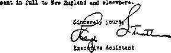
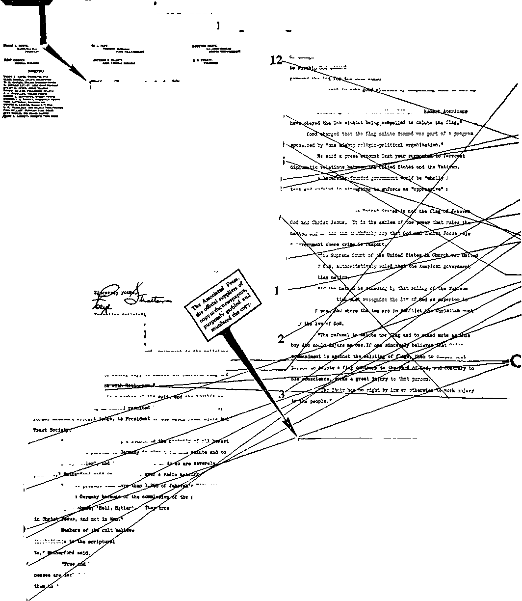
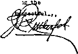
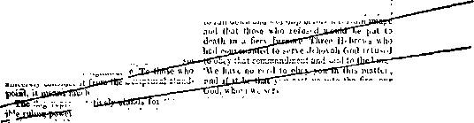
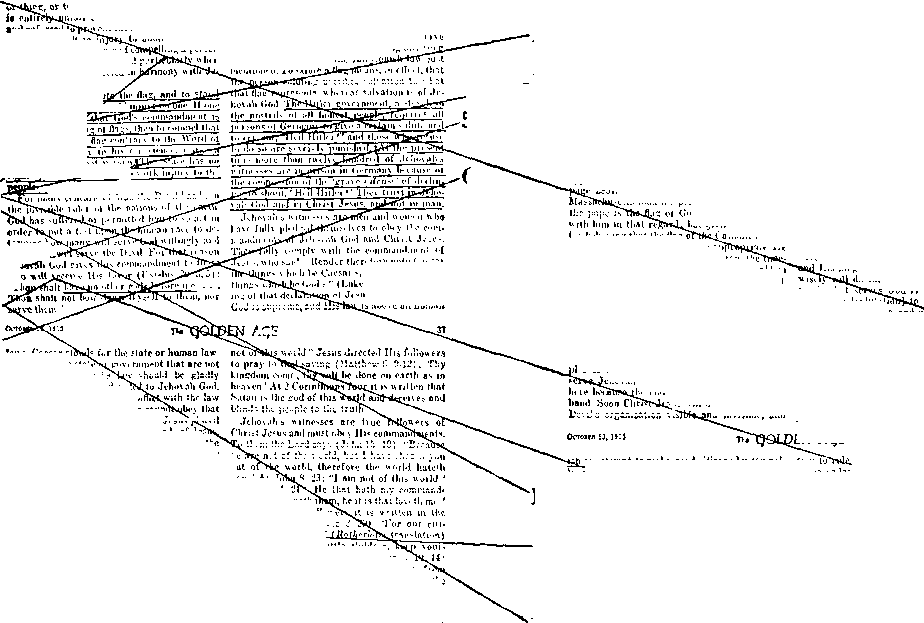
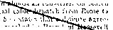
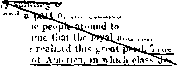

A JOURNAL OF FACT HOPE AND COURAGE
iiiiiiiiiiiiiiiiiiiiiiiiiiiiiiiiiiiiiiiiiiiiiiiiiiiiiiiiiiiiiiiiiiiniiiiiiiiiii
in this issue
AND
llllllllllllllllllllllllllllllllllllllllllllllllllllllllllllllllllllllllllllllll
every other WEDNESDAY
five cents a copy one dollar a year Canada & Foreign 1.25
Vol. XVII-No. 421 November 6, 1935
••ns9<-— ..... ■—■-
LABOR AND ECONOMICS
POLITICAL—DOMESTIC AND FOREIGN
Attempts to Raise Needed Revenue 89
SOCIAL AND EDUCATIONAL
Many Editors Are for the People 67
Associated Press Against People 71
Americans Resent Hitlerization 76
Cardinal O’Connell Unconvinced 78
It Garbles Facts and
The Business of Telling the Truth 82
Another Massachusetts Incident
FINANCE—COMMERCE—TRANSPORTATION
Bankers Want the Veterans’ Money 87
The New Deal Mail Service 88 NRA Dead in Post Offices Too 88 Why Not Make It 100 Percent? 89 Garbage Collector Not Suspected 89
TRAVEL AND MISCELLANY
RELIGION AND PHILOSOPHY
Scattering Sunshine in Oklahoma 86 Hierarchy Has Few Friends
Arrested for Breaking into Convent 90 Mrs. Brady Heads the Girl Scouts 90 Drove to the Right Shop
The Knowledge and Vindication
Partnership Between Pope
•• • — ---- ■■ — —1 •»
Published every other Wednesday by
GOLDEN AGE PUBLISHING COMPANY, INC.
117 Adams Street, Brooklyn, N. Y., U. S. A.
Clayton J. Woodworth President Nathan H. Knorr Vice President
Charles E. Wagner Secretary and, Treasurer
FIVE CENTS A COPY $1 a year, United States ; $1.25 to Canada and all other countries.
Notice to Subscribers
Remittances : For your own safety, remit by postal or express money order. When coin or currency is lost in the ordinary mails, there is no redress. Remittances from countries other than those named below may be made to the Brooklyn office, but only by international postal money order.
Receipt of a new or renewal subscription will be acknowledged only when requested. Notice of expiration is sent with the journal one month before subscription expires. Please renew promptly to avoid loss of copies.
Send change of address direct to us rather than to the post office. Your request should reach us at least two weeks before the date of issue with which it is to take effect. Send your old as well as the new address. Copies will not be forwarded by the post office to your new address unless extra postage is provided by you.
Published also in Bohemian, Danish. Dutch, Finnish, French. German, Greek, Japanese, Norwegian, Polish, Spanish, Swedish.
. , Offices for Other Countries
British 34 Craven Terrace, London, W. 2, England
Canadian 40 Irwin Avenue, Toronto 5. Ontario, Canada
Australasian 7 Beresford Road. Strathfield, N. S. W.. Australia
South African Boston House, Cape Town, South Africa
Entered as second-class matter at Brooklyn, N. Y., under the Act of March 3, 1S79.
Volume XVII Brooklyn, N. Y., Wednesday, November 6, 1935 Number 421
Many Editors Are for the People
rjiHE Nashville Tennessean said editorially:
The situation that arose out of a Lynn, Mass., schoolboy’s refusal to salute the American flag has been handled in a bungling, inhuman and un-American manner by the Lynn school board.
The boy, eight-year-old Carleton B. Nichols, Jr., is a member of a family associated with a religious sect called Jehovah’s witnesses, and his refusal to salute and take the required pledge to the Stars and Stripes was based on religious scruples and not on any lack of love for his country.
Mrs. Costa S. Mitchell, whose four children in near-by Saugus have taken the same stand as the Nichols boy, explains her position in this way:
'jiiimttiiiiHiiiinimiiitiiiHiiiiiiiimmiHiiiiiniiimiiiitriumiiiiiiHiiiiiiiHimiitiiiiiiiiiiiiiiiiiitiiiiiiimiiiiimiiiiiiHiiiiiiiiiitm
| Many men In America engaged in the news- | 1 paper business honestly and sincerely desire | | to serve the people by telling them the truth. | I Some of them have the courage to do so, | 1 while others are hindered because of the sin- | | ister influence exercised over them by the | | entrenched forces of a foreign power. I
| The Issue is now beginning to be made f 1 clear. The question is proper, How many 1 | American editors will stand by American | I fundamental principles and battle for the | j cause of righteousness? and how many will | | fall to the seductive Influence of a religio- | | political gang that Is trying to seize the rule | | of America as that gang now rules Germany? | I In this issue of THE GOLDEN AGE are 1 | reproduced the editorials of some of the i 1 honest, fearless editors, which the people i 1 will be glad to read. There are also published f = in this issue garbled statements by other | 1 newspapermen which clearly were made to | f mislead and deceive the people and thereby | | enable a foreign power to move forward In 1 | its nefarious work. |
| THE GOLDEN AGE hereby calls upon all
| honest Americans to show their appreciation
1 of the fearless, honest, sincere editors of f | American newspapers, and to express their
| disapproval of a bunch of traitors to Amerl-
^iiiiniiiiiiiiiiiiiHiiiHiiiitiHiiiiiiiiiiiiiiiiiiuiitinuniiiiiiiii uiiiiiiiii'iiuiitiiiiiiiiiiiBuiiiiiiiHiiiiiiiiiiiiiiHiiiiiiimiiiiimiiiiiin
“This is the best country in the world. I was born here and I’ve always lived here and always want to live here. But I can’t give allegiance to the flag because that would be putting Jehovah second.’’
Little Carleton Nichols, described as a “good boy’’, had no mark against his record except that he would not take an oath of allegiance which some group of law or rule makers had decreed all school children should take. There was nothing in the dispatches dealing with the ease to indicate that he was anything except a good schoolboy and that he might grow up to be a useful citizen if given an opportunity.
Because his parents felt that saluting the Stars and Stripes would be putting God second to the flag, this boy, in obedience to them, had the courage to stand out against teachers and pupils giving the salute.
It was unfortunate that an issue was made of this matter, and unfortunate that the best solution the Lynn school committee could find was to expel this buy from school. The solution was beneficial neither to the boy nor to society. Society, represented in this case by the Lynn school board, has a duty toward this boy, and it has failed miserably in the discharge of that duty. He is branded as an outcast unfit to associate with other children in the public schools, and unless his parents are able financially to send him to a private school he is denied the education which society owes to him. The likely result would be that this lad of character, bearing resentment against such cruel treatment, would grow to manhood unsocial and bitter.
It seems that if this mistake is corrected, the Lynn school board must make the correction, for the city solicitor announced that the board was within its rights in making regulations and predicted it would be upheld by the court in expelling the boy.
And unless this wrong is promptly righted, traces of the damage caused will remain for a long time to come and might persist throughout the life of this boy.
“Patriotism, Liberty'’
IN THE Cincinnati Enquirer in one editorial on the Lynn case it said, in part:
It is unfortunate that there is not another word than patriotism to describe that misshapen thing by which men seek to coerce their fellows into an attitude of loyalty. They do great disservice to the cause of genuine patriotism by annihilating intellectual and religious liberty in the name of the flag.
In another, separated by two days from the one above cpioted, it said under the caption “The Flag of Liberty”;
It is a curious case that has arisen in Lynn, Mass., in which an eight-year-old boy has been expelled from a public school for his refusal to salute the American flag. His father taught him, in consonance with Iris own religious beliefs, that it is “sinful to pledge allegiance to an earthly kingdom”. And the parent has been mo re successful than the school as teacher, which is not at all surprising. The case promises to become a cause celebre, and may wind up in the Supreme Court before the last word is spoken.
There really are two quite distinct questions involved. One is theoretical, and raises the issue whether the school should attempt to coerce a pupil in order to “tcaeh” patriotism. The other question is more practical, and centers about the future of a youth who is denied a public school education.
Undoubtedly it is a proper function of a state-supported school to inculcate a sane patriotism, and the rendering of homage to the national flag is surely a proper means to that end. But to attempt to coerce anyone is hardly a suitable method of teaching. It savors rather strongly of the Nazi tactics that Americans have been so quick to condemn. And obviously the eight-year-old in question is not going to be a better citizen tomorrow for being deprived of a public school education today.
The American flag is now a symbol of our national greatness, but long before our nation was strong and great, the Starsand Stripes were the symbols of liberty. That liberty included the right to complete freedom of religious and political belief. A good many of us are still old-fashioned enough to believe the flag still represents genuine liberty. If the word has not lost its meaning entirely, liberty ought still to include the right to think for one’s self.
In ousting a child for his refusal to salute the flag, the school authorities of Lynn are dishonoring the flag they pretend to be glorifying, for they are denying the liberty of which our national emblem is a proud symbol.
Five Miles from Salem Witch Burnings
[The Xnt.ion, October 23, 1935]
AN EIGHT-YEAR-OLD boy in Lynn, Massachusetts, because his family belongs to a religious sect called Jehovah’s witnesses which denies allegiance to any temporal power, has refused to participate in the flag salute ceremony which the school hoard imposes upon the pupils once a week. After a fortnight of hysterics the local authorities, at a loss as to how to cope with this particular crime, decided that expulsion from school was the only method of dealing with the situation. Under the regulations of our public school system, their next step will presumably have to be to arrest the boy or his parents for truancy. When city solicitor Patrick F. Shanahan was asked what effect the failure of the boy to take part in the flag salute had on the class, he said, “It didn’t seem to have any serious effect. The children are very young and things went on as usual.” This would seem to indicate that the eight-year-olds of Lynn are considerably smarter than their elders, and need be expected to commit thoroughly silly acts only when they grow up. When the American tradition of freedom of worship conflicts with the American tradition of compulsory education, it would seem to be the part of wisdom to say as little about the matter as possible. By making the situation a cause celebre, instead of letting little Carleton Nichols remain quietly in his seat and fix his thoughts on Jehovah while the other children were rapidly enunciating, “I-pledge-allegiance-to-my-flag-and-to-the-republic-for-whieh-it-stands-etc.," the Lynn school board has got itself into a pretty dilemma, has attracted the attention of all sorts of professional protestants, and is in the process of denying to an American citizen the free public schooling to which the law entitles him.
Forced Patriotism
fPHE Seattle Star said editorially:
“The folks who think that patriotism can be forced, and that public ceremonies and the taking of oaths for this and that are true demonstrations of loyalty, are exceeding even that silliest of nutty performances. . . . We know, if we understand our history, that the greatest traitors have been those who took the longest and loudest oaths of loyalty. We have that classic example of the rascal who betrayed the Master with a kiss. . . . What this country needs is fewer loud-mouthed loyalty howlers and more of the silent, sincere doers.”
“Salute, or Go to Jail!”
UNDER the heading “Salute, or Go to Jail!” the Birmingham (Ala.) Age-Herald says editorially:
“Massachusetts, the land where the Pilgrims came more than 300 years ago in a search for religious liberty, is being swept these days by a great wave of some kind of patriotism. Teachers are compelled to swear allegiance to the flag, and now several students are being punished, along with their parents, because they won’t salute the flag. .... From what source springs patriotism, one may ask? Is it patriotism to stand before a flag and raise your hand to your right eyebrow if your heart is not in the action ? If love of country is to be inculcated, it would seem that the proper thing to do would be to have that government so wise and good and kind as to deserve respect. Many a parent has learned to his sorrow that you cannot demand a child’s love. You can force obedience, but not respect. One somehow expects better things of Massachusetts than this spectacle of bringing a child into court for refusing a salute it did not feel because it recognized only a higher and more powerful government. . . . But Massachusetts has not always been tolerant of freedom of worship. The Massachusetts Bay Colony expelled Roger Williams and burned women as witches. The men who applied the torch at Salem probably number among their descendants the men who made this school law and who are now seeking to develop patriotism with threats of prison.”
Making a Mockery of Patriotism
THE Raleigh (N. C.) Neu:s and Observer, under the heading “The Flag and Castor Oil”, said editorially:
“To pass a law requiring that little children must formally salute the flag under penalty of ostracism from the public schools is to make a pompous mockery of the natural patriotism of American children. It is to put love of country into the category of such things good for children as castor oil and neck washing. It is to make the flag not a thing of the American child’s natural reverence and adoration, not a symbol of enthusiasm, but a symbol of force. It is to make the flag not a banner to which the love of the child goes up, but a standard from which force may come down hard upon the child. In a perverse world, children are entitled to their share of perversity, and it is to dare that perversity to say to the child, You’ll love this flag or get your breeches burned. And if children, being human, don’t love that which they are ordered to love under penalty of punishment, then not the communists, but the pompous, foolish patrioteers, who would make the flag as ridiculous as themselves, will be to blame.”
Compulsion Is Undemocratic
THE Democrat and Chronicle, Rochester, N. Y., said:
“The difference between a democratic and a republican form of government and a dictatorial regime, whether the dictation comes under the head of Fascism, Naziism or Communism, is that under the first type patriotism is spontaneous and voluntary, but under the second type it is compulsory. . . . Massachusetts requires by law that the pupils of every public school salute the flag every five days. This is taking the heart out of patriotism, removing its vital element of spontaneity. . . . Salutes and lip-service to dictator governments are necessary. The dictators know that allegiance must be compelled. Compulsion of this sort has never been necessary in this country, and it will be a sorry commentary on its ideals if they ever become accepted as necessary.”
“Parrot Patriotism”
THE Dallas (Texas) Dispatch, commenting on the Lynn (Mass.) case, said:
“Flag pledges are invariably demanded by politicians, a great many of whom are engaged in the unpatriotic business of cheating, lying to and grafting from the American people. It may be observed that not one politician has, as yet, suggested that all politicians be forced to repeat a flag pledge once weekly. That would be carrying the thing too far. There is a notion, widely held by politicians, that patriotism is a word-of-mouth affair, and that if one but does lipservice to the flag, as politicians do lip-service to American ideals, all will be well. This is the custom in Fascist and Communist dictatorships, where force takes the place of reason and people are pawns in serfdom to the state.”
“A Big School Board and a Little Boy”
rpHE St. Louis Star-Times says editorially: -*■ “The Lynn, Massachusetts, school board has finally arisen in all its majesty and expelled an eightyear-old child from the public schools because the boy obeyed his father’s religion-inspired order that he should not salute the American flag. Does Old Glory swing more proudly to the breeze now that this action has been taken, or does it droop a trifle? . . . the Lynn school board falls into error. It cannot distinguish between a voluntary and an enforced salute. It cannot see that compulsory saluting of the flag makes the flag less worthy of a voluntary salute. Let us establish the principle in the United States that American liberty includes the right to refuse to salute the flag, and practically everybody who believes in liberty will not only be willing to salute it, but will thrill with pride at doing so. ’ ’
A Teacher with Brains
Dane S. Dunlop, a teacher with hrains, wrote the following from Kalamazoo, Michigan, published in the Chicago Daily Tribune of October 2,1935:
“Today’s Tribune reports that again Carleton Nichols, Jr., aged 8, refused to salute the American flag in morning exercises in a schoolroom in Boston. He was sent to the cloakroom until the exercises were finished, and his father was arrested. Evidently the school authorities need instruction in psychology, pedagogy, Americanism, religion, history and politics. The way they are acting would do credit to Hitler, Mussolini, a barroom bouncer, and the Emperor Diocletian. The modern Romans and Germans are so degenerate that no strong faction still resists the dictators, but in Diocletian’s day he could make martyrs of the Christians but not conquer them. That is still the glory of Christianity among some of its adherents. I never heard of the sect, ‘Jehovah’s witnesses,’ until this Nichols affair, and probably would not approve of their ideas when they depart from standard church ideas. But neither Christianity nor Americanism, which has discarded persecution as a cure for religious divergencies, finds any expression in the recent Boston oppression. Is it necessary for Roger Williams to rise from his grave to teach again his doctrine of religious toleration ? I have given the salute to the flag in morning exercises in school, day after day. Usually I have pupils take turn in leading the school in giving the salute. While I never had a ease of refusal because of religious views to give the flag salute, I am sure I would tell the child that America is such a fine country that it offers religious freedom to all citizens, and cause him to love America instead of looking upon his native land as his oppressor. The Boston course of action merely serves to furnish fuel for the class of disturbers who claim Americanism means merely rights for rich men instead of for every citizen. That child should be offered every opportunity to learn that his religious rights will be respected. ’ ’
In Darkest Germany
TN Darkest Germany one of Jehovah’s wit-nesses was acquitted at a trial. As soon as he reached the street he was seized by one of the Nazis and dragged off to a concentration camp. What do Americans think of a “government” where one private citizen can grab another and, without a shadow of law or justice, deprive him of his liberty? Some idea of the terrible mental condition of the German people may be found in that such a large hole was made by people collecting ‘sacred earth’ at a spot where Hitler had done some digging that the authorities were forced to fence in the hole thus made.
Brodsky and the Swastika
NEW YORK CITY’S magistrate Brodsky made America laugh when he said of the swastika:
“The prominent display of the Nazi flag carries with it some of the same sinister implication as a pirate ship sailing defiantly into the harbor of a nation, one of whose ships it has just scuttled, with the Black Flag of piracy flying aloft. In a large sense indeed it might seem as though whatever disturbances attended the sailing of the Bremen were provoked by the flaunting of this emblem to those who regard it as a defiant challenge to society. In the minds of these defendants the emblem of the Nazi regime stands for war on religious freedom—in brief, a throwback to primitive conditions.”
Says Let the Nichols Lad Alone
W Martin Jones, Jr., writing in the Roch-• ester (N.Y.) Times Union, said:
“There has been much talk of late about some boy who refused to salute the flag. But a close scrutiny reveals that boy is made of the right kind of material after all. For he is loyal, but his loyalty is to his father, who has a special twist of mind on this subject in preference to the flag. . . . Reverence for the flag is like reverence for anything else. It is an operation of the mind and must come from within. It cannot be forced from without by means of laws and punishments. To attempt such methods can only drive respect away and erect hate instead of love. ’ ’
The Flag Oath in Pennsylvania
A DISPATCH from Canonsburg, Pa., states that in the public schools there the pupils swear allegiance daily as follows: “I give my hands, my head and my heart to my God, my country and my flag: one God, one country, one flag.” Not being able conscientiously to take this oath, Grace Estep and Murray Estep, Jehovah’s witnesses, suddenly found their pictures and their story occupying front-page space recently in the Pittsburgh Sun Telegraph, Pittsburgh Post-Gazette, and many other Pennsylvania papers.
Swastika-ism Not Admired in Canada
SWASTIKA-ISM is not admired in Canada.
The Toronto Mail and Empire, commenting on the Lynn case, said:
“It is questionable whether forcing children to salute a flag really inculcates patriotism. A simple way out of the difficulty would be for the state to admit that just as persons having conscientious objections to war are not required to fight, so persons having conscientious objections to saluting the flag should not be obliged to do so. It wouldn't hurt the flag.”
« A man in Jerusalem, whom they call Jesus, and who appears to be an ordinary carpenter that came down from Nazareth, is trying to start a new kind of organization here. Evidently he is trying to get worship for himself, even though he says he is not. This fellow is the head of a new CULT. He claims not to be interested in Roman politics, and he may be honest. You can depend on it, however, that the Jewish clergy will stand by Rome and take whatever action we direct against this man Jesus. The fellows that are following him are ordinary fishermen and men of like low order. Their leader Jesus is telling them something to the effect that soon a kingdom will take the place of the rule of Rome. It will be easy for us to turn the clergy against him and his crowd, because they know on which side their bread is buttered. This man teaches a peculiar kind of doctrine. He says ‘hate is murder’, and he teaches people to be good to each other. But my acquaintance with the Jewish clergy shows that they are the greatest hypocrites on earth, and I don’t know but that this man Jesus is one like them. Anyhow I am keeping my eye on him, and my secret service men are keeping in close touch with him. None of the big men amongst the Jews have any use for this man Jesus; therefore I don’t think we need to fear him. He delivered a sermon the other day that sets forth a peculiar and unusual doctrine, but it is not of public news and I will not transmit even the substance of it to you except to say this: He pronounced this unusual rule: ‘Blessed are the meek, for they shall inherit the earth.’ His bunch seem to be very meek, and no doubt their object is to get hold of the earth, which properly belongs to us. You may not be surprised at anything that happens. I will keep you advised.”
All who today are familiar with the life and teaching of Christ Jesus when on earth would know that the above statement set forth in dispatch is garbled, and false, and made for the very purpose of deceiving the simple and to bolster up the big moguls who were then running the earth. Likewise today at Rome another like gang operates, and their agents throughout the earth send dispatches to Rome and all over the land which are garbled and far from the truth and made for the very purpose of deceiving the simple and trustful people, and to bolster up the ungodly crowd that think that they own the earth and are trying to rim it.
The World’s Greatest News-gathering Agency
The Associated Press claims to be the world’s greatest news-gathering and distributing organization. It was founded and incorporated in 1900. Less than ten years ago, so it claims, over 1,000 important newspapers comprised this cooperative union. Of its membership it says:
“The membership of The Associated Press includes persons of every conceivable political, economic and religious advocacy. The one thing upon which they are united, so far as the Associated Press news service is concerned, is that it shall be wholly free from partisan activity, or even the expression of any opinion whatever. The service is intended to be limited to the reporting of news without bias. To this end the news service is intentionally and necessarily subjected to the criticism of its fifteen directors, . . . members and indeed the reading public. It is the theory of the organization that, in a self-governing country like ours, the citizens, if given the facts, must be able to form their own opinions respecting them. ’ ’
Why, in actual practice, does not The Associated Press live up to these high principles? And why, in fact, should it resort to the shameful garbling of news as revealed on pages 80-811 of this issue? Look at those pages, study them, see for yourself what was done, and say if you can harmonize it with the foregoing.
Judge Rutherford stated truthfully, “Jehovah’s witnesses are not a sect or cult,” and gave the reason for his statement, Scripturally, as shown in text of his address (see page 81), under subheading “Fate”. This was an essential part of the statement which The Associated Press asked him to make, yet in the opening sentence of its alleged “factual” report of Judge Rutherford’s address he is referred to as “prominent in the religious cult”; in the next sentence the offensive term “a member of the cult” is used again; and in the fifth paragraph the same falsehood appears as “Members of the cult”.
A Challenge to The Associated Press
If The Associated Press is really “without bias” and really without “religious advocacy” it has abundant power to get the clergy of the land together, to select from their midst their best
euccTon
spokesman, to answer Judge Rutherford’s contention that “the clergy claim to represent Jehovah God but in fact represent the Devil, and are against the best interests of the people”.
The Associated Press could well afford to take up this challenge with Judge Rutherford, agree upon the questions to be discussed, and the radio stations to use for a nation-wide broadcast. Jehovah’s witnesses would bear half the expense. If The Associated Press would then carry the debate in full the following morning, the whole country would have a chance to see who are the impostors and who have the truth. One who speaks the truth cannot properly be referred to as a member of a cult. When Jesus said, “Thy word is truth,” He did not give any license to anybody to refer to the Scriptures or their proper use as the work of a cult.
If The Associated Press will seek diligently among its employees it will not find one man in any responsible position who will admit that he believes that an infinitely loving God deliberately arranged in advance to roast almost Rie whole human family in the strangling fumes of burning sulphur, for something that the first man upon earth did six thousand years ago. And yet this one doctrine of the inherent immortality of man is the one and only doctrine that binds together all branches of so-called “churches”, be they Catholic, Protestant or nondescript.
The Associated Press, perhaps unconsciously, is committed to “religious advocacy” of the majority against a minority; it is not “without bias”, and it dares not face the issue or accept the challenge.
But in the long run it would be far better for
Judge J. F. Rutherford, President, fetch Tower Bible 4 Tract Society, Brooklyn, H. I.
Dear Judge Rutherford:
We have a carbon copy of a circular letter presumably written by A. R. Gous of the peoples Pulpit Association, to which van attached a copy of what is described as a broadcast nade October 11, both in relation to your speech on October 6.
If the person making the statements with respect to The Associated Press had sought to infora binself, a grievous injury to The Associated Press could have been avoided. It also would have prevented the Golden Age oagazine from being used as a medina of carry* Ing editorial oooaent unjustly and unfairly attacking The Associated Press—which I aa sure cannot be the policy of any spokesman or organ representing your Society.
The only purpose of this letter, however, is to advise you correctly that The Associated Press carried a story of about SOO words in the evening of October 6, immediately on receiving a copy of your manuscript after the broadcast. We quoted you factually, the story being
Lloyd StrattonxGH
Ml umm toraut m Mn ft «t« TO»t h
October 16, 19S5.
all concerned if it could pluck up courage to let the whole truth come out. The people could then judge for themselves, and “in a self-governing country like ours, the citizens, if given the facts” would then have a chance “to form their own opinions”.
More to It than the People’s Opinions
There is more to this question of the supremacy of God’s government and God’s truth than the opinions of any people. All must face the issue, Will they bow to the will of the Devil, conforming themselves to his governments and his churches, or will they, while they can yet do so, take their stand unequivocally on God's side? All must make the choice. Those that make the wrong choice will perish at Armageddon, just ahead; those that make the right choice may live through it and be of the millions now living that shall never die. What if the choice is a little humbling to human pride? Can anybody afford to go proudly into a death from which there can be no waking, when a more humble-minded course might bring him everlasting life ?
It is Jehovah God, and not Jehovah’s witnesses, that has written on Belshazzar’s walls that Satan’s kingdom has been weighed in the balance and found wanting, and that it must perish at Armageddon. In that crash everything of his organization, including all its publicity agencies, will disappear, but there is a chance that some of the individuals may survive. It is for them to take their stand on the side of truth before the fierce anger of Jehovah is expressed. —Zephaniah 2:1-3.
The letters of The Associated Press to Judge Rutherford and to the editor of The Golden Age, herewith reproduced, are scrubby and pusillanimous when viewed in the light of the facts set forth at pages 80-81.
The rebuke which The Golden Age carried in its last issue was deserved by The Associated Press.
■r. C. J. Woodvorth, The Golden Age Publishing CO./ 117 Adams St., Brooklyn, N. Y.
Deer Itr. doodeortbi
Why is it that this great newsgathering association is afraid to quote what Judge Rutherford said about the Roman Catholic Hierarchy? The Associated Press takes its stand, in effect, with the Roman Catholic Hierarchy and against Jehovah's witnesses. The Associated Press shields the Hierarchy and studiously lends itself to hide from the people the truth about the iniquities and abominable practices and schemes of the Hierarchy. Is such a course in the public interest and for the public welfare?
Some Recent History
While faithfully performing his duty in the spring of 1933, Judge Rutherford made sound and reasonable statements exposingthehypocrit-ical teachings, methods and schemes of the Roman Catholic Hierarchy. At that time he was broadcasting regularly over more than 300 radio stations in the United States. Instantly the Hierarchy ordered and launched a campaign of coercion, boycott and intimidation of the most shameless sort, to try to force radio stations in all parts of the country to cancel their contracts with Jehovah’s witnesses. Less than 30 stations yielded to that pressure.
The Associated Press must have known about this infamous procedure, for the front pages of Catholic papers everywhere in the country carried extensive details under bold headlines for weeks; yet The Associated Press was virtually if not altogether silent while this right of free speech was being ruthlessly taken from a minority.
I enclose copy of a letter written to Judge Rutherford, further in regard to which we have received a copy of your issue of October 25.
The Associated Press is charged with being "cowardly and unfair." We do not knos who is responsible for such misguided and badly informed statements, or who undertook to attack The Associated Press, in tbo manner Indicated in a broadcast made October 11. I am telling you, however, the charges have absolutely no basis in fact.
The record of The Associated Press in covering the news of the Lynn story is clear, unbiased, impartial and complete. So is the news we carried fro* Judge Rutherford. It ought to be apparent The Asbocifted Press was interested in all news elements by the fact it offered to quote Judge Rutherford's views* The inferences about the Roman Catholic church are not only misplaced, but are inaccurate and irrelevant so far as The Associated Press is concerned. The work of The Associated Press recognizes no government, race or creed.
Lloyd Ctr&ttonsGH
• J ***«• VMIJTM MMTt
■inwui «—
riur nciMOMCS new* onMUMTr
4KJMM « CLUOTT a t rou.Tr
October 16, 19X5*
Others may do as they like, but Jehovah's witnesses and their friends will not yield to tyrannies of any sort. Within a few weeks 2,500,000 Americans, friends of Jehovah's witnesses, presented Congress with the largest petition that up to that time had ever come before that body. That petition was an appeal for the preservation of the right of free speech over the radio. It was a subject that should have appealed to The Associated Press, but neither at that time nor at the time of either of the two Congressional hearings held thereafter did that great newsgathering agency show any genuine interest. In other words, it quietly took the side of the Roman Catholic Hierarchy.
Largest Convention Held in Washington
In June, 1935, Jehovah’s witnesses to the number of 20,000 assembled at the nation’s capital city in what the Press of Washington called ‘‘the largest religious convention ever held’’ there, and what that city’s officials admitted was the most orderly. On that occasion Judge Rutherford spoke on ‘•Government”, a recordbreaking assembly in and around the Washington Auditorium hearing that speech, which was simultaneously broadcast on a world-wide network consisting of the most unique and extensive combination of wire and wireless communication facilities, public-address appliances and sound equipment. From all parts of the United States as well as from thirty-eight foreign countries listeners’ messages of appreciation of that speech were flashed to the speaker at Washington. According to communications experts, it was the most successful international broadcast ever made. The Associated Press was as silent as the grave with reference to that news.
From the time of its birth, in 1900, until now The Associated Press has had for its president a Washingtonian, Frank B. Noyes of The Evening Star. On June 3,1935, The Star had Judge Rutherford’s address on “Government” all in type, two full pages of text matter, but at the last minute refused to print it, even as a paid advertisement, because he had referred to the Roman Catholic Hierarchy as a foreign power seeking to grab control of the United States government. Let the people judge whether or not Frank Noyes and his associates are afraid of the Roman Catholic Hierarchy.
In the Lynn affair The Associated Press has followed its usual course as respects the Roman Catholic Hierarchy and Jehovah’s witnesses. It has completely shielded the Hierarchy from the blazing light of truth, but it has not been afraid to identify the Nichols boy as a child of one of Jehovah’s witnesses. Why?
The Associated Press claims that it was fair in its stories sent forth from Lynn. Its course is not so regarded among those who prefer to tell the truth. If it was afraid to quote Judge Rutherford’s mention of the Roman Catholic Hierarchy it should have been much more afraid to mention Jehovah’s witnesses. It was unwilling to risk offending the Hierarchy, yet it did not hesitate to link a gesture of friendship by a stranger to Jehovah’s witnesses with Vanzetti, and thus lead the unthinking to the conclusion that the former were in some manner bound in with the latter.
Jehovah's witnesses Are Followers of Christ
Jehovah’s witnesses have placed with the people more than two hundred million copies of Judge Rutherford’s books explaining the Bible truths now due to be known and understood. The people have received those books at their own doorsteps. There is not a road too rough, nor a lane too long, nor a language or dialect too difficult, to stand in the way of the work of Jehovah’s witnesses. This generation can never say it did not know what is coming and what everything indicates is just at hand, Armageddon.
People in all lands of earth who have read these books know that Jehovah’s witnesses are not Communists, not Anarchists, not Socialists, not Townsendites, not Technocrats, not Doug-lassites, not Coughlinites, not Monarchists, and assuredly not Romanists. They are followers of Christ, who came to earth to bear witness to the truth in obedience to the command of His Father, Jehovah; and they, too, will be heard. It is to the interest of every true American that they shall be heard.
When It Is a Little Different
Jehovah’s witnesses could stand it very well, ordinarily, to have it distinctly understood that The Associated Press is the mouthpiece of the Devil's organization, his official spokesman, and that they need not expect and will not receive any assistance in their work of proclaiming the Kingdom of Jehovah God as the one and only hope of the world.
But conditions are a little different when they have been publicized all over the country, as they were in the Lynn case, and been put in an unfavorable light, and then are several times asked for a statement (as was done by The Associated Press on October 1, October 2, October 3, October 4, and October 6), and then when the statement was prepared, and given radio publicity, such a job was done by that press association as is shown in detail on pages 80-81.
Many Editors Disagree with AP Methods
This issue presents many editorials from America’s leading newspapers, which editorials are the exact opposite in tone and spirit of the attitude which The Associated Press has maintained for years against Jehovah’s witnesses and the Kingdom message which it is their duty and privilege to bear.
Thus the editor of the Boston Traveler, published where the fires against Jehovah’s witnesses have recently been blazing so furiously, said in the issue of October 10:
What, please, can be done to the child; what kind of disciplinary measure? Stood in a corner? Kept after school? Slapped on the wrist? Expelled? Even our courts allow members of a religious group to “affirm” rather than “take oath”, when giving testimony. And upon this testimony a life may depend, yet the courts have no cause to worry about the veracity of the witness. This youngster in Lynn who refuses to pledge allegiance to the flag consistently says he does so because his religion forbids it. Apparently he would refuse, whatever country he was in. So where the treason to the United States?
Nine days earlier the same capable and fearless editor said to his readers:
If the child, believing it to be sinful to salute the flag, had saluted it, it is likely that all trouble would have been avoided. And thus we see what can come of compulsory pledges of allegiance.
Some people with about the mentality of the ordinary priest or preacher entirely lose their heads when they get to thinking about such purely human inventions as the flags which fly over the various nations of earth. An instance is the following paragraph from the National Geographic Magazine of September, 1934, in an article on “Flags of the World”:
“It has been said that flags were divinely ordained; that when Jehovah made His covenant with mankind that all flesh should never again be destroyed by a flood, He sealed the pledge by unfurling across the heavens the great banner of the ages—the rainbow itself. ’ ’
In The Golden Age, issues Nos. 417, 418, 419, there is furnished proof that the Roman Catholic Hierarchy, the most wicked crowd in the world, is moving to subjugate all the peoples of the earth to variations of the Mussolini-Hitler forms of government, i.e., Roman Catholic Fascism. This central idea of Judge Rutherford's speech on “Saluting a Flag” was deliberately cut out by The Associated Press and was relegated to the waste basket as being not a “news element”, but only “inferences” “inaccurate and irrelevant”.
The Duty of Jehovah's witnesses
The Associated Press could start the fires of persecution burning against Jehovah’s witnesses in every corner of the United States, and it could thus become the handmaid of the Roman Catholic Hierarchy, but when it was given the opportunity, which it had five times requested, to read and to present to the public Judge Rutherford's address on “Saluting a Flag” it would do nothing whatever to quench the flames it had started or even to mitigate their severity. As a sample of one of the hundreds, or by this time thousands, of examples of unnecessary suffering brought upon Jehovah’s witnesses by this cowardly knuckling to the Roman Catholic Hierarchy, there is herewith presented a report received within the last few minutes which all true Americans are requested to read, and to hang their heads in shame that such conditions could prevail this side of the accursed government that operates on the other side of the Rhine.
A number of families of Jehovah’s witnesses live in Nemacolin, a mining town located in Greene county, Pennsylvania. About the latter part of September the school board discovered that little Lillian Koroly, six years of age, and her brother Mike Koroly, Jr., eight years old, were not taking part in the school’s flag saluting exercises. The teacher asked Lillian why she did not salute the flag, and the little child replied, “Because the flag belongs to the Devil.”
The teacher informed the parents concerning the matter, and the father of the children went to see the principal and explain why his children had taken this stand. He said he taught his children the scriptures concerning the true worship of Jehovah God and that they must take their individual stand in order to have life everlasting. He said the reason why his children were not saluting the flag was because Jehovah says, in Exodus 20:3-5, ‘ ‘ Thou shalt have no other gods before me. Thou shalt not make unto thee any graven image, or any likeness of any thing that is in heaven above, or that is in the earth beneath, or that is in the water under the earth: thou shalt not bow down thyself to them, nor serve them: for I the Lord thy God am a jealous God.” Because of this scripture Mr. Koroly believed that Jehovah alone is worthy of full devotion and adoration.
In further proof of his stand he read from Deuteronomy 4:10, “And I will make them hear my words, that they may learn to fear me all the days that they shall live upon the earth, and that they may teach their children.” Again, in Deuteronomy 11:18-20, “Therefore shall ye lay up these my words in your heart and in your soul, and bind them for a sign upon your hand, that they may be as frontlets between your eyes. And ye shall teach them your children, speaking of them when thou sittest in thine house, and when thou walkest by the way, when thou liest down, and when thou risest up. And thou shalt write them upon the door posts of thine house, and upon thy gates.”
A little later on it was discovered that Louis Wiel-kiewicz, about ten years of age, was also not saluting the flag. His teacher said, “I will give you ten chances to salute the flag, ’ ’ but the child continued to maintain his stand. The principal of the school sent Louis home and told him not to come back to school any more until he was willing to salute the flag. The boy’s father took him to the principal and explained why Jehovah’s witnesses and their children do not salute the flag. Mr. Wielkiewicz requested the principal to read from the book Preservation, pages 72-74, concerning Mordecai’s refusing to bow down and worship Haman. The principal stated that this did not apply to flag saluting.
Mr. Wielkiewicz asked the principal if he could send the boy back to school with the understanding that the child would be left to his own free will in regard to saluting the flag. The principal refused to take the child baek. As the result, little Mike Koroly, Jr., and Louis Wielkiewicz were expelled from school until the school board held a meeting.
The children’s parents were present at the board meeting and Mr. Wielkiewicz asked permission to say a few words in support of the stand taken by the children. He read Exodus 20:3-5, and pages 42-45 of The Kingdom, the Hope of the World, which shows that the three companions of Daniel, Shadrach, Meshach and Abed-nego, did not bow down to the golden image which was set up. They did not say as some do today, “I can salute the flag with a mental reservation that I do not mean it.” Such would be a compromise in order to obtain the favor of men. ‘‘Daniel’s three companions refused to bow down because to do so would have been proof of unfaithfulness to God. For this they were cast into a furnace of fire; but God delivered them. At the present time many people who claim to be devoted to God, when the band plays, ‘God Save the King,’ or some similar national air, unhesitatingly stand up, like others, thereby giving approval to a form of adulation of men. That is an endorsement of Satan’s organization. Such excuse themselves by saying, ‘I can do this with a mental reservation that I do not mean it.’ But such is a compromise in order to obtain the approval of men. Daniel’s three companions refused to do that, and God approved them and delivered them.” Mr. Wielkiewicz told the school board they were responsible to Jehovah God for the action taken against the children. The board replied stating they would take all the responsibility on their shoulders.
Young Louis was sent home on three different occasions, and Mike Koroly twice, because they would not salute the flag. Each was severely whipped, and Louis was whipped on several occasions, the last one being administered on October 7. On October 19 the boy was still bearing the black-and-blue marks on his thighs. The children have been expelled from school until they will consent to salute the flag.
Americans Resent Hitlerization
Americans resent Hitlerization. It is one thing for the Jesuits to promote a Ratti-Mussolini partnership in Italy or a Ratti-Hitler partnership in Germany, and quite another and a different thing to accomplish the same result in the United States; and the effeminate silence of The Associated Press, where they should boldly mention the Roman Catholic Hierarchy, does much to help the Jesuits gain their objective, yet there is bound to be a big awakening before long respecting this Vatican City monstrosity that presumes to try to put true Americans off the air in America itself.
The Boston Herald, though it asked for Judge Rutherford’s address on “Saluting a Flag” and yet lacked the courage to publish one word of that address because it feared the boycott methods of the Roman Catholic Hierarchy, nevertheless did have sufficient courage to publish the following letter from Marion M. Jaques, of Newton Centre, in its issue of October 14:
‘‘It seems to be a popular political pastime to smother our teachers and pupils under oaths and pledges. Dr. Mather has many supporters because of his disapproval of the teacher’s oath; it is time some one took up cudgels for the little Lynn pupil, now expelled from school for failure to ‘pledge allegiance to the flag’.
‘’It is hypocrisy to teach children ‘liberty and justice for all’ and then expel from school an eight-year-old boy whose juvenile mind places ‘liberty and justice’ in divinity instead of ‘one nation, indivisible’. It is possible the child is right. At any rate, he needs all the education our public schools can give him. A classroom is disrupted for days, teacher and principal consult, committees are called, a hearing is held, and finally a child is turned away from the very door through which he should pass daily to learn true citizenship; citizenship taught by an understanding teacher, one who could explain the difference between religious allegiance to his God and political allegiance to the flag of his republic. If he then can acknowledge only one as worthy of his devotion, he is still entitled to and should have an education under the state law which requires children under 16 to attend school.
‘‘The pledge to the flag, by the way, was written in 1892 by one Francis Bellamy, a member of the staff of the Yout/i’s Companion. Its use in the schools is neither nation-wide nor constitutionally obligatory. I do not recall having to repeat it when I registered to vote. (Beacon Hill should do something about this.) As a clubwoman I rise and add my voice to others when I am asked to do so, but I do not feel that my love for or allegiance to my native land is materially increased by the verbal repetition or the gymnastic gesture.
‘‘The ‘letter’ is too much with us.”
If You Are an American
If you are an American do you wish to have your news garbled as The Associated Press garbled Judge Rutherford’s address, shown in the exhibit on pages 80-81 of this issue?
Take the time to examine those pages critically, and judge for yourself whether Jehovah’s witnesses have had a fair deal.
The AP dispatch of October 6 (reproduced at page 80, and marked “FIRST MUTILATION”) is the 500-word “story” prepared at the press association’s headquarters and “sent from New York on the trunk circuits serving all members of The Associated Press in Connecticut, Rhode Island, Massachusetts, etc. Members of The Associated Press are located in nearly all the principal cities of New England.”
The “SECOND MUTILATION” (page 81, lower right corner) is just an example, showing how each member newspaper of the press association finally presents such a “story” to the reading public. That “second mutilation” was the dispatch sent out on October 7 from Lynn by the Associated Press representative after he had regarbled the “story” received by him from his New York headquarters. That twice-garbled “story”, published by the New Britain (Conn.) Daily Herald (reproduced in facsimile at page 81), is set out here for the reader's convenience:
Lynn, Mass., Oct. 7 (AP)—Attempts to make Carlton B. Nichols, Jr., 8, of Lynn, salute the flag received condemnation from two widely separated places.
In New York city yesterday Joseph F. Rutherford, prominent in the religious cult “Jehovah’s Witnesses” to which Carlton and his family belong, branded the attempts to make the lad salute as ‘ ‘ in line with Hitlerism. ’ ’
In the Universalist church in Bridgewater, Mass., Edward Holton James, of Concord, nephew of William James, the psychologist, and Henry James, the author, said:
“Today we have a set of political busybodies who are trying to push down the throats of teachers and children a vulgarized, contaminated patriotism which sickens the heart of every genuine American.”
Rutherford, a former Missouri circuit judge and president of the Watch Tower Bible and Tract society, said in an address:
“The Hitler government, a stench in the nostrils of all honest people, requires all persons of Germany to give a certain salute and to cry out: ‘Heil Hitler,’ and those who refuse to do so are severely punished.
“shot-gun methods”
“True and honest men of America, in which class Jehovah’s Witnesses are included, do not need shotgun methods or prisons to compel them to do what is right.
“Real American citizens who love the bill of rights and the fundamental law of the land, who believe in freedom of thought and speech, and above all in the right of man to worship according to the dictates of his conscience, will condemn the lad for the stand he has taken. It is foolish to attempt to make good citizens by compelling them to act as hypocrites.”
The boy has refused to salute, saying the flag is an emblem of the devil and saluting is against his religious beliefs.
James said “we ought so to use the flag as not to cause anyone to look upon it with dislike. No idea of coercion, compulsion or dictation ever should be associated with the American flag, which is a symbol of freedom. Take freedom away and it ceases to represent any moral principle. ’ ’
James, who was active in behalf of Sacco and Vanzetti, and the lad’s father, were arrested last week for “disturbing school” when they attended exercises at which Carlton refused to salute.
Roger N. Baldwin of the American Civil Liberties league said in New York the league had offered to defend young Nichols.
The foregoing AP dispatch of October 7 from Lynn was published also in the Providence (R. I.) Evening Bulletin on October 7. No other member newspaper of The Associated Press, so far as is known, paid any attention to either the AP garbled story sent from New York “to New England and elsewhere” on October 6 or the AP regarbled story sent out from Lynn on October 7. Typical is the attitude expressed by the publisher of the Waterbury (Conn.) Republican, W. J. Pape, who is also First VicePresident of The Associated Press. Writing October 23 to the operators of radio station WBBR at New York, he said: “We find that the interview with Judge Rutherford sent out by the A.P. on October 6 was not used in any of our editions. . . . and in the judgment of our news desk the Rutherford interview was not of sufficient interest to be carried.”
Editors Will Be Next
Pape would not want his own children tortured or abused, but is willing that the children of Jehovah’s Avitnesses should bear without relief what The Associated Press has brought upon them; but if the receivers of Dutch Schultz into their “fold” finish their job here Pape’s children will come next—unless he is a Papist.
No doubt the screws will be put on all the editors quoted in this issue who have dared to take their stand on the side of freedom of worship and on the side of common sense.
No doubt there will now be a grand rush of politicians to protect the United States government from the terrible dangers it faces at the hands of an eight-year-old boy!
In this campaign of foolishness, if the future is to be judged by the past, the politicians will be ably assisted by the priests and preachers, whose usefulness to the people of the United States is far less than that of the one eightyear-old boy in Lynn who has tried, not in vain, to show what it means to have true courage and to take a real stand for Jehovah God.
It is just too bad that the Associated Press copy writers who mutilated Judge Rutherford’s address on “Saluting a Flag” could not have a term in school in the same class with Carleton B. Nichols, Jr.
A NYBODY who knows even the least little bit about American politics knows that Cardinal William O’Connell of Boston holds the State of Massachusetts in the palm of his hand. Cardinal O’Connell is interested in education. All good Catholics are required to educate their children in parochial schools and to keep them out of ‘‘the sink holes of iniquity, the godless American public schools”.
Cardinal O’Connell is interested in children. That is known, because every time the Child Labor Amendment comes up in Massachusetts the cardinal publicly takes his stand against the kids, the great power of the Roman Catholic Hierarchy’s political machine is put in operation, and the boys in the State House do what they are told, like so many frightened sheep.
And this brings one to Mr. Shanahan, the gentleman who was so honest as to admit that there is no law under which Carleton B. Nichols could be compelled to salute the flag, which he conscientiously believed he ought not to do; but after Mr. Shanahan had had time to hear from Mr. O’Connell, how different everything looked to him!
It is not necessary to say anything about the Lynn school board, except that they are as completely under the thumb of Mr. Shanahan as he is under the thumb of William O’Connell, or as Mr. O’Connell is under the thumb of Ambrose Ratti, or as Ambrose Ratti is under the thumb of the Devil.
But that all may see the argument of Attorney Moyle, which it was decided in advance would not suit the Devil, would not suit Mr. Ratti, would not suit Mr. O’Connell, would not suit Mr. Shanahan, and would not suit the Lynn school board, it is given in full herewith.
The Boston Post, once the issues are squarely drawn, would hardly dare run the risk of losing its advertisers by championing the cause of Carleton B. Nichols, even though its initial write-up was so fair and honorable.
Elsewhere in this issue is disclosed what came to pass when Cardinal O’Connell had had a chance to have his say. Read Attorney Moyle’s statement to the school board (in behalf of Carleton B. Nichols, Sr.) which now follows: To the School Committee of
the Lynn Public Schools:
We have been summoned to appear before you to show cause why Carleton B. Nichols, Jr., should not salute the United States flag when called upon by the teachers of the school. We are glad to have the opportunity to present to you the reasons for the stand taken by us in the matter.
The United States flag is the symbol of national sovereignty and authority. It is spoken of in highly laudatory terms, and the very attributes of Deity ascribed to it. We cite the following from The Encyclopedia Americana, Volume 11, page 316:
“The flag, like the cross, is sacred. Many people employ the words or term ‘Etiquette of the Flag.’ This expression is too weak, too superficial, and smacks of drawing-room politeness. The rules and regulations relative to human attitude toward national standards use strong, expressive words, as, ‘Service to the Flag,’ ‘Respect for the Flag,’ ‘Reverence for the Flag,’ ‘Devotion to the Flag,’ ‘Behavior Towards the Flag.’ ”
Also the following as to the meaning of colors in the flag:
‘ ‘ White signifies Purity and Innocence; Red, Hardiness and Valor; Blue signifies Vigilance, Perseverance and Justice.”
Such adulatory and approbative terms put the flag and the government which it represents virtually on the plane of divinity. When the flag is spoken of as sacred and pure, and humans are told to have reverence and devotion to it, virtues are ascribed to it which belong only to Almighty God, the Creator.
The one who offers salute to the flag, described by those in authority in such acclamatory style, signifies his assent to the symbology. The salute then is an act of obeisance to this representation of government carrying the attributes of divinity. It is an act of worship ; for worship means to reverence and to serve.
If an individual or the majority of the people desire to worship the flag, that is their privilege. But no majority has the right through any rule, ordinance, or statute to declare that others shall likewise offer reverence to a man-made creation.
Centuries ago Jesus said, “Thou shalt worship the Lord thy God, and him only shalt thou serve.” That principle has been recognized by this nation from its very birth. Government officials have required obedience to law, but have recognized that the law of Almighty God supersedes the law of the state or nation. On this point permit us to quote the words of Senator Walsh of this state to the United States Senate. The occasion was a resolution brought before the Senate making it unlawful to hoist any flag or pennant on the same staff above the flag of the United States on any battleship, cruiser or other naval vessel. The flag of the Roman Catholic church is flown above the national flag on naval ships at the time of holding church services. Senator Walsh opposed the resolution and stated in part as follows:
‘ ‘ I want to repeat, Mr. President, that I refuse to put even the flag of my country or the authority of my country above the emblem of God, and I for one refuse to depart from the time-honored custom of placing the emblem of God above every other emblem in the world. I will not haul down the pennant of God for any other emblem.”
Many people will not agree with his statement that the Papal banner is the pennant of God, but will agree with the principle therein stated of the supremacy of God over this and all nations. The United States Senate concurred in that opinion, rejecting the resolution by a vote of 68 to 10.
We think that the Committee will agree with us that obedience to the laws of God comes ahead of obedience to the laws of man, and that in case of conflict it is proper and necessary that the laws of man should be violated in order that the law of Almighty God may not be disobeyed. We feel that no educational body in Massachusetts, with its historical background of civic and religious liberty, would repudiate such position.
Be it known then to you, Members of the School Committee, that Carleton B. Nichols, Jr., will not offer salute to the flag as requested by you, for the reason that in so doing he would violate the law of Jehovah God, which is supreme and above every law.
The Most High God, Jehovah, has commanded His people not to bow down or serve any image of anything in heaven or on earth. (Exodus 20: 4) The American flag represents the United States Government, and is a symbol of the alleged purity, innocence, justice, valor, vigilance and perseverance of that government. A salute to that flag is a bowing down, an obeisance, and an act of worship as fully as when the Israelites bowed before the golden calf.
Carleton B. Nichols, Jr., at the tender age of eight years has learned to reverence and obey Jehovah God, and will not disobey His commandments.
Many centuries ago three faithful Hebrews, Jehovah’s witnesses of that time, were commanded by King Nebuchadnezzar to fall down and worship a golden image. These men firmly and positively declined to obey the king’s command. For such offense they were cast into a fiery furnace. Their bold and unequivocal stand for freedom of worship has received the admiration and approval of all “Christendom”, and their course of action has been held forth to the young as worthy of emulation by them.
A parallel case is now before this Committee. Carleton B. Nichols, Jr., has been ordered to salute the flag; to render honor, homage and reverence to it. In plain words, to worship it. He is threatened with punishment; expulsion from school if he refuses. He refuses to salute the flag because he will not disobey the law of God.
Whom should he obey: God, or the School Committee ? Should he stultify his conscience, and disobey the Lord’s command, as he sees it, just for the sake of peace in school, or educational advantage? The Committee is to judge on that.
Is it not a fact that in its effort to force this lad to salute the flag the school authority is endeavoring to make a hypocrite of him? You say: ‘Salute the flag and all will be well.’ He might take the easy course: salute the flag, and avoid a lot of unpleasantness. Then he would receive your commendation. For what ? For the performance of an act of hypocrisy. Saluting the flag will not change his convictions. It will not increase respect for the flag. It will not make him a better citizen. He would have under duress and compulsion performed an act which in his heart he believed to be wrong. He would have learned that acting one thing even though believing another sometimes saves trouble. And this educational body would be the one guilty of starting him off on the pathway of hypocrisy.
Instead of persecuting him for his convictions, his teachers and the school officials should encourage and uphold him.
We recognize the difficulty in which the School Committee is placed. We understand that the law prescribes the salute to the flag by teachers and pupils. Such law is undoubtedly an unconstitutional infringement on the right of liberty and freedom of worship. Teachers and school officials should have sufficient courage to refuse to enforce such regulat ions against pupils who conscientiously refuse to salute the flag. Suppose the legislature passed a law requiring teachers to present and teach the doctrines of some one certain religious organization. Such would be unconstitutional, and the teachers would be justified in refusing to enforce it. That should be their position in this case.
The patriotic susceptibilities of some people seem to have been shocked by Carleton’s answer that the “flag belonged to the Devil”. Perhaps the answer is blunt. Maybe more diplomatic language should have been used. Nevertheless, the answer is correct. The Divine Record relates how Satan offered Jesus rulership of the entire world in return for obedience to him. Jesus did not deny the ability of Satan to give him the rulership, but refused the offer. Later He said:
‘I will no more speak much with you: for the prince (ruler) of this world cometh, and he hath nothing in me.’—John 14: 30.
The history of the nations, including the United States, proves that Satan, the Devil, is the invisible power which directs their acts. The flag of the nation then is his flag, and it would be a disobedient and dishonorable act for any true follower of Christ to salute it.
We firmly and conscientiously believe the Bible teachings that the nations of the world, including the United States, are like Babylon of old. They have been weighed in the balance, found wanting, and will soon be destroyed at the hands of Almighty God. The record tells of the determination of Jehovah to gather these nations and pour out upon them His fierce indignation. (Zephaniah 3:8) Upon the ruins thereof the Kingdom of Jehovah, for which we have all been taught to pray, will be built up. We have definitely taken our stand on the side of this new Kingdom; and regardless of the consequences, we will not bow down, worship, offer homage, or salute that which represents or symbolizes any other nation.
Respectfully submitted this 8th day of October, 1935.
(Signed) Carleton B. Nichols Individually and as parent of Carleton B. Nichols, Jr.
[See footnote
- 2 -
of thought and freedon of speech, and above all in the right of non
the bold stand he has taken for Jehovah.
itlsens by oonpelldng then to act ad
October 16; 1955.
Rutherf
14
15
Dear Judge Rutherfords
said
desire.
10
FIRST MUTILATION
16 sing "Anerica"
rar
of declining to
Judge J. F. Rutherford, President, Watch Tower Bible & Tract Society, 124 Columbia Heights, Brooklyn, I. I.
obeyed the law without being conpelled to salute the flag."
arged thet the flag-salute deaand was part of e program
tlone
--founded goveraaent
d be "wh
orca
God hnd Christ Jesus. It is the eablen of
that rules
on and no one can truthfully say
Jesus
t where er
pent
Chur
. authoritatively ml
e Aeeriean gove
tag by that ruling o
"If the na
recognise the law of
two are in
fliet
istian nu
■The refusal
and to
belief
person to
to that person
a great
he State
o right by lew or oth
Tract Soei
a radio
s. and not in
Members of
erford said
■True
la</of God
e united State
CThe Supreee Court of
ount last year
ne said a press
hty rellgio-polltical organisation.
asored by "ana
inconsis-
0
5
October 22,19:
8 Witnesses
6
st in Jehovah God and
Gentlemen:
their destruction would follow
adneuitiott to "have no other gods before
honest mu of Anerioa, in which class Jehovah’s wit*
17
eluded, do not need shot-gun nethods or prisons to compel
do what is right."
■Real American cltlsens who love the principles of the bill
12
ip God according to the dictates of his own conscience, will
We do not know which newspaper* published The Associated Press story referred to in ny letter of October 16, but I glad to enclose a copy of the story as it was written and sent fron Mew York.
As you know. The Associated Press la a news-gathering sol distributing organisation serving Its nenber newspapers, who «n it. Tta newspapers print so auch of the news report as they
I an sorry we cannot bo of any assistance in referring you to a newspaper that published your broadcast, or explain the Boston Harald's handling of the copy. You sea, we do not have an •xctange or clip newspapers. I suggest one of the clipping agencies, whose business that is, night bo of sone jdd.
[entire Assistant
Wew York, Oct. 6 (AP) - Joseph F. Rutherford, pronineht in the religious 0" cult, "Jehovah’s Witnesses", said today that attenpta to coapel Carlton 1 B. Bichols, Jr., Lynn, Mass, school boy, to saluta the American flag and
coaaend the lad
foolish to attaapt to sake g
hypocrites."
The boy's father is a neaber of the
fusal to salute the flag in school
forwer Missouri circuit
d the youth's re*
expulsion. Rutherford,
of
the Vetch Tower Bible
"The Hitler govenment, a stench ta
people, requires all persons of G
try out: 'Bell, Bltl
those who refuse
nostril* of all
certain
punished,
orford said in an address
■At the present tine no
f the grave offense
disobedience
of rights and the ftodaaental law of the land, who believe in freedon
13
tent
Declaring that "for acre than 150 years
and unfair" in attea
"The flag of the United State
a gov
States, 147
is a Christian na
Court then the net
the lew of
obey
t God’s
compel that
CTB-KR-S26P
To the Associated Press, New York
Answering your letter of October 18. Y.ould it not have been more in keeping with honesty and fair* ness to the people for you to have sent out the speech as I gave it without deliberately garbling it thereby deceivin e people?
Uy
page 71]
Saluting a Fhj
GOLDEN AQE
Moozirx.
jBretdfMt tw chiin 8u»uj>, Cxubsr C, IS-"', I; Ju’,
of then sincere desire to be free to worship God
of tender years, who dedtutd to «alute the erican flag nnd sing * America He is the son
At the thud chapter of Danni the Divina Bccurd ita.es that m viul it um or b"d x law the guv ci nme.it of Babylon mode a law lommaudi.ig all poisons, when tin- nabuiul hymn »a- played, to fall down and worship before a c>-rtniij
■DECENTLY much puWkity has been given to the case of Carleton B Ni(ho)s,Jr, a c< it-L-
uIkv that commandment and *-aiJ to
9
jou ca=t u« into thfj lire, mir
the ficfj funnier . and II' will ctohvi r u- ' 'Ire
of one of Jehovah s witnesses The Associated Press has requested me to express my vuw of (he matter. This I do from the standpoint of a true Mower of ChrMJ^m' Tom-my poisons the saluting of the flag is merely a tonnalij and has Uttle or no 'ignificanco
sincerely consider it 3cei iptui a! stand-
e flag repmcntuXi . .......
ibk TU'foattcnipt by law to compel
JcItTrcn orcluld of autmn to salute any objtet to Hvg tn called “patriotic songs ’, nfair and wrong Laws arc made
According to the dictates of their ow n conscience. It now appears tliat in if j'sachiisettv, the very cradle of American liberty, an oppresi'nc rule js attempted to be enforced tliat takes~an ay the' liberty of the citizen to worship God a' God has commanded that man shall worship. The government or state is wlio'iv inconsistent and unfan in compelling utizen- to salute the flag No otje is injured by a man cons'icntiousiv serving Cod as he is commanded by the Lord Jehovah a %\itncs«es are thniuughh desoted tu God and ( hint Jesus, and they will ob< y the laws of God ithi.H*-, and i.ill obey the laws (lf t) f state cr
ij.i’i <_i i tir nt has a ri"he to cinipnl a man to vio-1 .tc Cuds h" m wLn)i lie cunscicntiuusly and
that includes al! who tale their stand on the fide
of the Deni Ea<h person must choose for himself Thcie can be no compulsion on either s.de. A' fur Jehovah's witnesses they will sene and obey Jihovah God
It is a gicat pity for the people who attend the churches that thmr clergymen fail to teach tin in ilje truih of Gou s Avoid For their neglect the cb igvnien arc doublv responsible Today the cmnlincd <InirJi organization celebrates 'loyalty day ' Du thev mean locally only to man! If cntiruv local to God they no harm to no one. To compel the saluting of the flan, thereby eav-
ing in .»yxibc), ‘We took
flag for «a)va-
tion, ’ is doing rr- it harm to man and reproaching the name ci Ji God —Galatians 6. H>.
The Baltimore Ltcnmg bun editorial!' expresses the true American s.ntiment in these words
prui al upon the nr.l-ltn saluting law of Babyh'ii
■\ ,-nt the commission of ov ert
10
11
would rot 1
but giving him credit
atholic chuicb
ord, in Fihruary, 1929, as favoring the right of the flag Ilf the pope to be thus displayed, and this
On (he ships Ghat ply the tea the Roman Cath-ohc 'emce is held At that sen ice the flag of the pope i; displ.ived above the flag of the United
statute ri-'p children is
।lit the nation g 'landing h
ate He
"person toZa
god/>W c0
inony v» mi
?. and to '
hoVah God 1
6
ur manv ccntaii's SMjn the D'.v d has l-c n
has -it
Render thcRiurv unto (. .u
vtfhtm
iving (Matthew 6 9-12). Thy
to pray m
Ocrosut JJ. J9?5
kingdom come,
heaven ’ At 1 Connt
Satan is the cod of this
the pope )v
with him in that ri'
mg O'-cubts ■-jivalioii Au v hat
Winds the people to tne trut
Jehovah s witnesses arc true
Christ Je»us and must r,b< v Hi« rommaii
tl nn the Lord say s (John 15 19) “Bcea
world, therefore tlip world hate’ll
n 23: “I am nut of this wmld ’
Ie that hath my compiand'
, he it is that luvth mf '
God is suni erne, and Hjs
iw done on earth as in
it is written that
eiv es and
= tor the state or human law
piv< rmnent that are not
■ should be gladly
lo Jehovah God.
bev that
ii< t e IxxiTtJ?
hand Soon Chfi
AGE
s woild " Jesus directed His followers
5
to .rtempt to make good otizen< by’ compel-
13
We ought to obey God rather than cts 4 19, 5-29) Jehovah’s witnesses
FITE
Jehovah’s witnesses arp in a s-Anm covci ant or agreement to obtv God and C hri-d Ji 'ii*. and rjhem to break that covenant means tin ir de-
lensm t" seize rmr.dlU 111 Eui’'!*1 ing to seiz< control of the American institulio is, •nd the policy nf compulsory fieg saluting is bat
. ... io stand. They gladls obey every of the^JbUdli.it is r.ot in conflict with God's
Fiinda rf ti.e pc'p'c and comp* 1 submission to
» an ailitriiy fl'ijatur <>pp rniuhty ifli.-Ti > polit-I n’il o- - ~ ' .itmn ic I k "I the • i.tiic pi । 'i ?) t
)n- o olieyed the lav?*w>ujiout lx ing cuiupi lird to
' ■ ■’ " mg real to now
-compel flag-saluting! The rca'uPi once again I warn the Amr‘nran peup'?
taw. But w htii
B&d enforced to
•cts that result in iii ya* Trade tor the purpose of
<0 violate his conscience, nnd par
to another, and Me [hnga person
that couseieiice is dnected in Jiovah God's "Word.
The, refd«al to tilu ynute, os this l>ov didfcmd^! sineerclv Itvhfy, '
Jehovah God to jalutc any flag or sing anv exactly in line with the Babi Kicnfinnrd. To 'nllltC
g-lutcs? bin-''* when has the Star-Spangird Banner s:
: tnjmy to Unt r i^H, by law t*i
tenoinc ho how manj.
-Th
!’•) T1 e num-
is above all human
re 2Sjl. In that instance the senator fiom n?tts tool, the position that the flag of
foi believing tJiat the flag o
the flag of God bis words are ap'j
said
one refuse to depart fmm the
honored Amcriinn custuni of plu< iru the emblem of God above every other embk-m of the world
float Ki.lire iB P' pk i jii rs ><d it of tn<ir Oi n fnc will end uphe'd r <ivt of pi। fui’icc—nut bfcauw they Dar it, but bu-ai r :h.\ Ic-.c it If ilie : me Jib come
foiecd tr.liUt'- t i.i luc tun? 1 a- rum. io haul it down and hunt in r-. ; 'act some, r J c- black banner of
The N.ibuls l.id ha- been tatirid by his patents t" * ivc and oliev Jehovah He has made a wise choice, d.Jating hin.'-di for Jehovah God
His kingdom oi right'oiisnts« Alt who act do the same thin? The gicat niul-1 Gud is revealed as saying:
Jar.« Caesar st
AJi law? q! Hie «ta‘c . in conflict with Gods obeyed by all who are dcvoR ._ .........
When the law ot man in in ccmflTXvvith the law Of Jdiovah, then the Chn-tian cann< , -----
taw of juan. The apostles of Christ JesusSipced this exact construction upon the words of Jei IiBBWet to ehatges of violating the law of the province or state tiny »atd to the Inch court: '"Whether it be light in the sight of God [for us] earken unto *uu more than unto God, judge
other einbkm ’’ The Senate, bv a vote rd 68 to 10, sustained the senator in that po*:(>on The I nited States government is therefore estopped from saying that the flag of the CmPd States should be honored above Jehovah God.
The most important question before (he peo-lies of earth now is, AV hum do vm choose to ehovah or Satan tl.e Devil t T) v crisis is ■-■ he end of the Devil's reign is at ' his v. ul destroy ad of u.e Devils organization vis nd invisible, and
titude that
“Salvation ['dutati
teth upon the thione, and iii
our God, winch sit-
e IChnst),”—
------------------ I'« 1 "V eipks of .he Bi 11 of Rights and the fundamental * ** Ln of fie Lnd, v Im lielieve m freedom of thou'dit and freidutn of epev li, an^, alxive nlh in th'' light of ri.iii to wor’-hip Goo aeconling to the .lietab* of his own conscience" will corm nu-nd the lad, CaVieton B~Niciiol°,~Jr, for the
not of the world, but I have choS' n you
Eh/ AQE
39
men.
take th
■iw id J11HJI is iii dnvrt eon-fiict with (,uds Uty^thiy cannot and *iU not Comply therewith
It is written, at Roman- 1 "Let every soul be subject unto the higher and many
wrongfully hold that "the high ewers’ are the visible ruliT> ul the nations c Biripture is addressed to the follow ers Jesus wd to no others, end "'the higher po ire Jehovah God and Chn=t Jesus, and ever true fidtower of Christ Jesus must obey God m' preference to man
The flag <d_(b. United states i' not the flag pf Jehovfih G"d and Chri-t J< »us tt 13,the emblem of the poy t r that rule* the natio~i , nn’j mv me ran tiuthtuliv say that God and Christ Jc->U8 riJe a government win re cnin< is rampant" Sen-have organized governrm nt?, ami Satan the Devif overreaches men and rules them be-HUSC <rf their refusal to obey God, and hence the nation* of the world art. und^r the control »f Satan the Devil, as stated at 1 John 5 19-'We know that we are chi!di en of Gud, and that the whole world hes in the power ot the Evil M»®.” (Weymouth) In proof of thi«. mark tie Msnla of Jesus. That the Devil is the invisible ■tar of the world, note this from the Bible: ■tan took Jesus up on a high mountain, and, the god of this world, he showed Him all ” ’ ■ of the world and off'red to give M upon condition that Jt-sus would Id worship the Devil, Jesus refused atthewi 10) • “Thou shalt worship iy God, and him only shalt thou
c$h Thia
vou ’ At Jo At John 14 2 jnrnh and keejxth t
rung Hie follow?
Scriptuics (Phihppians 3 "!
•aetiolup- ’ _ 1
At 1 John fi 21 ’Little children,
selves from idol* ’ At 1 Corinthians ‘"Wherefore, in} beluved brcthr-'i, flee ff, idolatn ’ Thu com-nandim nt is based upon the commandment at Exodu- 2H 4, j.
irii? whole earth It has its peflitica) funbvsadois i i"St al) countnes. Un Marell
snatch fiom Rome t
.... ... .v Yuik b i ■ stat,« tlfl
nxnt ha* been reached bv Prcsidtn -
jnd the Vatkon and that diplomatic rclctiuiTS* 1 shall bo c-trbliehcd between the United Stab ■* . 'ui d the Holv S;»' as soon as public opinion in ] .........■
(. ompuiter;
Hitlerrni end li
of the studied.
that
one who duct
nnd fanHV
True ____ 17 ip, 1 them t j .Hi
ot
.obey Christ shall be d> *tinycd.
When Jesus .............
Roman governor'filmed to J'sus and said to tin; Jews, "Behold yo " - T -
answered. We have no £ntBAnt (.
iiiiiiiittiiiiiiitiiiiiitiiniiifiiiiiiiitiiitiiittiiiiiiiiiiiiriiiiiiiitiiiiiiiiiiiiuiiiiiiiiHiiiiiiiiitiiiiiiiiiiiiiifiJiiiiiiiiiiiiitiiiiiniititiiiiimi
SECOND MUTILATION
A SAMPLE
proof, Jesus, at John 12 31,stated thepnnce or invisible ruler of this jRwWin 18.36, He said: “My kingdom is
their repudiation of th'ir mvito resulted in their destruction The question tu Jehovah’s witnesses their C >rc i« .•'hall 1 oNty । । y command of man and dm, or shall I obcy'J^jQ-vah God and Ine? ’
Jehovah’' witne'se? are not a sect or cult ’ Th«y are true tullowers of Christ Jc'u£,’"The’ Bible is their only creed. God has given them a banner or flag, and that is Hi> message of truth, a« stated in P^alm 20 5 Jehovah commands His witnesses to ‘ litt up a standard for the people’ (I«aiah 62 10), meaning that His witnesses must raise Gods standard of truth and point to that as the only salvation of man. E'ery nation has a different standard, and therefore none of these are God’s standard
The Pilgrim fathers left the oppressive na‘i mS in Europe, and landed tn New England, because
Each newspaper mutilates to suit its own wishes. How can an honest man explain this use of the word “condemn” instead of “commend”!
SALUTE TO TOTO ..
STARMUTLE ;
Ceupsb’rc Gesture «l Respect !
Saiject d A: u 11 ’
A GENERATION ago many Americans believed that the business of a newspaper is to tell the truth. With here and there an exception, few newspapers are now anything more than collections of advertisements which carry enough reading matter to hold their subscribers. The owner is usually a wealthy man or a wealthy group that wishes full control of a means for getting its views before the people.
Not an intelligent editor or news writer in Boston but knows full well that the law requiring school children to salute the flag or be expelled from school is un-American and foolish, and an entering wedge to Fascism or Nazism, entirely political and entirely absurd.
Whether it was political influence, or financial influence, or Roman Catholic influence, or all three together, that led to the publication of the following from the Boston Post, October 10, 1935, will not be known at once, but it can be set down as morally certain that the writer of the article is a Roman Catholic, without a particle of respect for the United States flag, the United States Constitution or the Constitution of the Commonwealth of Massachusetts: he could not be a loyal subject of Ambrose Ratti, and sworn to do everything possible to put the pope’s flag above the United States flag, and keep it there at all hazards, and be a true American.
Anyway, Roman Catholic or not Roman Catholic, professedly American or a hyphenated American, the one who wrote the following is entitled to the Biblical degree of D.L., hereby awarded. His story, as published in the Post, contains so many lies that its publication is followed by a letter from Attorney 0. R. Moyle, addressed to the Boston Post, which all lovers of truth will greatly enjoy.
[Boston Post, October 10, 1935] Flag Salute Strike Is Ordered Here Boston Pupils Told to Refuse Giving of Allegiance The spreading flag salute strike of school pupils in Greater Boston is a direct result of orders issued from the Brooklyn, N. Y., headquarters of the Company of Jehovah’s witnesses, to stage a demonstration against obeisance to the United States flag, it was learned yesterday, as the organizations of Judge Joseph J. Rutherford, author of the slogan, “Millions now living will never die,” swung into action to oppose the expulsion of Carleton B. Nichols, Jr., from the Lynn schools.
NO STATE LAW
As Attorney-General Paul A. Dever declared there is no law on the statute books to provide a penalty for a pupil who refuses to salute the U. S. flag, but that it is up to the school committee of the various cities and towns to take disciplinary action against those who refuse, a spokesman of Jehovah’s witnesses revealed that orders for the flag salute strike came directly from Brooklyn.
Six school pupils in Saugus and one in Lynn have refused to salute the flag, and the children of the numerous membership of the Boston Company of Jehovah’s witnesses, who meet on Huntington avenue, Back Bay, have been instructed to refuse the salute, it was learned.
Oracle of the Company of Jehovah’s witnesses, and of the International Bible Students’ League, Judge Joseph F. Rutherford, who is also head of the Watch Tower in Brooklyn, N. Y., has directed that all the resources of his organization be placed behind the fight against the compulsory flag salute, it was stated yesterday by Attorney 0. R. Moyle, counsel for the Company of Jehovah’s Witnesses.
Filed with the Lynn school committee in defence of the action of the Nichols boy in refusing the salute is a long brief prepared by Judge Rutherford. Judge Rutherford, in 1918, as head of the International Bible Students’ League, and the Watch Tower Tract Society, was sentenced to 20 years in jail on a charge of conspiracy to violate the espionage act, and later was purged of the charge.
A flag salute test will be given all the school children of Saugus, this morning, according to an order issued last night by Superintendent of Schools, Vernon W. Evans. This action was taken when Fred A. Gott, seventh grade pupil at Central Junior High School, Saugus, and his sister, Shirley Gott, sixth grade student at Roby School, Saugus, refused to salute because they are members of Jehovah’s witnesses.
There are six pupils in Saugus schools who refuse to make the salute. The others are: Costa Mitchell, 12; Constance Mitchell, 11; Philomen and Philip Mitchell, 9-ycar-old twins, all members of the family of Mr. and Mrs. Costa Mitchell.
Saugus has no School Board rule concerning saluting the flag, but will act today, following the “no salute” check-up, and take the names of those who decline to salute, for consideration at the Friday night meeting of the School Board.
In Lynn District Court, yesterday, Carleton B. Nichols, Sr., machinist, father of the boy who started all the “no salute” furore, was fined $25 for disturbing a school in session. Edward H. James, nephew of William James, the philosopher, and Henry James, the novelist, was fined $25 on the same charge.
October 14, 1935 Boston Post, Boston, Mass.
Gentlemen:
In your issue of October 10 there is an article entitled “Flag Salute Strike Here Is Ordered’',
which contains many glaring misstatements. I am therefore presenting the facts to you in order that you may have an opportunity to make correction.
The article contained these headlines: “Flag Salute Strike Here Is Ordered”, “Boston Pupils Told to Refuse Giving of Allegiance. ’ ’ These headlines are absolutely untrue. No flag salute strike was ordered. No directions were given to Boston pupils, or any other pupils, to refuse allegiance.
The article further states: ‘ ‘ The spreading flag salute strike of school pupils in Greater Boston is a direct result of orders issued from the Brooklyn, N. Y., headquarters of the Company of Jehovah’s witnesses, to stage a demonstration against obeisance to the United States flag ...”
The statement is absolutely false. No such orders have been issued.
The article further states: ‘ ‘ Oracle of the Company of Jehovah’s Witnesses, and of the International Bible Students’ League, Judge Joseph F. Rutherford, who is also head of the Watch Tower in Brooklyn, N. Y., has directed that all the resources of his organization be placed behind the fight against the compulsory flag salute, it was stated yesterday by Attorney 0. R. Moyle, counsel for the Company of Jehovah’s Witnesses.”
This statement is also false and untrue. I never made any such statement or anything remotely resembling it.
Your article further states: “Filed with the Lynn school committee in defence of the action of the Nichols boy in refusing the salute is a long brief prepared by Judge Rutherford.”
This statement is also untrue. No brief prepared by Judge Rutherford was filed with the committee.
# * •
The facts are as follows:
Carleton B. Nichols, Jr., aged eight, is a quiet, studious lad, who has learned to do some of his own thinking. His parents are sincere students of the Bible, and are zealous witnesses of Jehovah. They have carefully instructed their children to love and serve and worship Almighty God. They have taught their children the Bible truths concerning the establishment of the righteous kingdom of Jehovah on earth. At the opening of the school term Carleton decided in his own mind that it would be wrong to salute the United States flag because it is not the flag of God. He said nothing to his parents about the matter, and when the time for giving salute to the flag arrived, he remained quietly in his seat. He had received no instructions from his parents, or anyone, and made the decision entirely on his own initiative.
For thus following the dictates of his conscience and showing his loyalty to the Supreme Ruler of the uni-
(* In its Issue of October 16, 1935, the Boston Post printed Moyle’s letter, but omitted all that portion between the lines marked with asterisks, giving as a reason the Hitlerized remark, “You don’t suppose anybody who refuses to salute the flag would get much consideration, do you?’’—Ed.) verse, he has been expelled from the Lynn public schools.
On Sunday, October 6, Judge J. F. Rutherford delivered a lecture over a chain of radio stations on the subject “Flag Salute.” It was given in response to a request from The Associated Press for a statement from him on that issue. Copies were furnished to the press for publication. The newspapers have unanimously refused to print it. It appears that they would prefer to misrepresent, misstate and distort the issue, rather than let the people know the truth. A copy of this address was also filed with the Lynn public school committee for their information.
Jehovah’s witnesses arc not instructing anyone to refuse to salute the flag, or to give allegiance to the country. Their business is preaching the gospel, and they are not telling anyone what they should do or should not do. When one is penalized because of his loyalty to Almighty God, Jehovah’s witnesses will assist that one in the protection of his rights. For that reason they will assist this Lynn school boy in prosecuting his right to attendance at the public schools.
I trust that you will print this letter in its entirety and thus in some measure correct the gross misstatements of your previous article.
Yours very truly, • • •
0. R. Moyle.
Professor Pashby’s Lather
EFERRING to Professor Pashby’s lather at Lynn, Massachusetts, a writer in the Ohio State Journal who signed himself “Patriot” said:
“In this desperate frenzy of adult patriots to save the nation from the horrible menace embodied in an 8-year-old third-grader there is something so ridiculously out of all proportion that it stands in a class by itself.”
In somewhat similar vein, an editorial in the St. Louis Star-Times says:
“Instead of making themselves ridiculous by kicking this little kid out of school, why doesn’t the school board give him a special medal for filial obedience? His attitude toward the flag will then take care of itself. ’ ’
Another Massachusetts School Incident
lbert Miller, of Shelburne Falls, Mass., on being summoned to the office of the principal of the Arms Academy to answer to a charge of refusing to salute the flag, called attention to a statement in Psalm 94: 20 and asked the principal to read it. The principal did so. He read aloud, “Shall the throne of iniquity have fellowship with thee, which frameth mischief by a law?” Then he said, “Gee! I hope not.” Nevertheless Albert was expelled.
(Broadcast October 11 from WBBR)
T)Y NOAV almost every newspaper reader in. the United States and Canada knows something of the boy at Lynn, Massachusetts, and the attempts of the school authorities to compel him to salute the flag. Thanks to The Associated Press, American newspaper readers know one side of the story.
What is wrong with The Associated Press, that on a matter of such great public interest and importance it spreads the news on only one side of the question1?
Is anyone so foolish as to think that the city of Lynn, or the state of Massachusetts, or the United States of America, is in any jeopardy because an eight-year-old boy in the public school at Lynn refused to be coerced into doing something he conscientiously believed could not and should not be required of him in his laudable desire to gain an education?
What is wrong with The Associated Press, that it asks for and receives the other side of the story, and yet fails to publish that?
The Associated Press often claims that it publishes all the news worthy to be put in print. What holds it back from making good its boast ?
With zeal for but one side of the news The Associated Press has thrown the weight of its influence against that eight-year-old boy, against his parents, and against the God of the Bible.
Is The Associated Press afraid to incur the displeasure of the Roman Catholic Hierarchy? The Hierarchy says that the people shall not see; just blindly follow the leader. So in Germany the Catholic Hierarchy sets up a not-see leader in the person of one Hitler.
Manifestly The Associated Press is afbaid to publish live news, such as that set forth in the speech by Judge Rutherford Sunday October 6, on the flag salute, because the scheme of the Roman Catholic Hierarchy to Hitlerize the United States, and the world, if possible, is shown to the people in that speech.
But do the American people wish to be Hit-lerized, or swastika-ized? They will be if The Associated Press has its way, because that institution is controlled by Big Business, and Big Business is in cahoots with the Roman Catholic Hierarchy for Nazifying the United States and therefore will not allow its black-robed sinister partner to be shown up in its true light. Because Judge Rutherford’s speech contained the truth about the Roman Hierarchy’s steps and plans in depriving the American people of their liberties, The Associated Press is withholding fair and clear presentation to the people of both sides of the question raised by the refusal of the Lynn boy to salute the flag.
Eventually the people will find out, anyway, that the Supreme Court has decided that this is a Christian nation, and that therefore the law of God should consistently be the supreme law of the land. Why not let the people know the truth now?
Eventually the people will find out, anyway, that the United States Senate has approved the flying of the flag of the pope above the Stars and Stripes, because of the supposition that the flag of the pope is the flag of God. Why not let the people know that truth now?
Eventually the people will find out, anyway, that the project is on foot for the United States to exchange ambassadors with the Vatican, and that Jesuit plans are well under way to seize the United States government and run it in the same way that Spain and Mexico and South America were run for centuries, and the way Italy and Germany are run now by the Roman Catholic Hierarchy. Why not tell them the truth now, letting the people know all that is to be known on the subject and let them decide for themselves what stand they choose to take?
Does The Associated Press think that it will come out of this unscathed? Is it in the mood to try swords with JEHOVAH, the true and living God? The Associated Press may do as it pleases, but if its business is to furnish news it would do well to do it, and not be content with merely one side of the news.
Every intelligent American should read Judge Rutherford’s address “Saluting a Flag", published in The Golden Age, Number 420. School superintendents are asking for it. Read that statement. It is absolutely convincing and satisfying. Read it, and decide now whether you wish to be Hitlerized, swastika-ized, Nazified or Mus-solinified by the Roman Catholic Hierarchy, The Associated Press, or anybody acting in their behalf. Watch your step, or you will be compelled soon to say the equivalent of “Heil Hitler’’ before you know what it is all about.
Would you be like Jesus, with courage to refuse to bow to the Devil when offered the whole world, when you knew It meant constant opposition and persecution even unto death? Or would it suit you better to be of those who, when Jesus stood before Pilate, cried, ‘‘We have no king but Caesar”? Here is a question for the American people: Is The Associated Press patriotic, loyal, faithful to American principles? Or is The Asso. elated Press loyal and faithful to the Roman Catholic Hierarchy, the fathers of Nazism? Let every American decide for himself.
A five-minute talk
Warning (Part 1)
by Judge Rutherford
JEHOVAH’S Great Prophet, Christ Jesus, uttered a prophecy which is recorded at the 24th chapter of Matthew. That prophecy gives information and warning of approaching disaster at the end of the world. Among other things Jesus said (Matthew 24:16): “Then let them which be in Judaea flee into the mountains.” A Judean is one devoted to the service and praise of God and whom God uses as His witness. Such witnesses of Jehovah are the ones whom the Lord now uses to sound this message of warning to others. There are millions of other persons of earth who are of good will toward God and who have a desire to see God’s kingdom of righteousness rule the world; and these being in heart harmony with His kingdom, they are properly said to be in Judea. These latter ones are the ones who are warned to ‘flee to the mountains’.
The word “mountain” is used symbolically in the Scriptures to represent God’s organization. Jehovah’s universal organization is pictured by a great mountain out of which is cut a stone without hands and which stone symbolically pictures God’s anointed King, Christ Jesus. That Stone, according to the prophecy of the second chapter of Daniel, becomes a great mountain or kingdom which rules the world. The “mountains” mentioned in the prophecy of Jesus therefore mean God’s kingdom of righteousness under Christ the King and Rightful Ruler of the world and which kingdom is the only hope for the peoples of earth.
The great prophecy of Jesus concerning the end of Satan’s world began to have its fulfillment in 1914 with the coming of the World War. Then followed many woes and great distress upon the people even as Jesus had prophesied, and which distress and perplexity the people are now experiencing. The Scriptures show that Satan’s world will be destroyed and a warning is given that some may take advantage of the information and flee to the place of refuge or safety -which God has prepared for them.
When shall these “flee to the mountains”? Jesus answered (Matthew 24:15): “When ye, therefore, shall see the abomination of desolation, spoken of by Daniel the prophet, stand in the holy place, (whoso readeth, let him understand:).” The holy place is the sanctuary of Jehovah God. It is the royal house of Jehovah composed of Christ Jesus and the faithful members thereof, and is otherwise called the kingdom of God under Christ. To His faithful disciples Jesus said (Mark 4:11): “Unto you it is given to know the mystery of the kingdom of God.” That mystery began to be made known to the followers of Christ Jesus after His ascension into heaven. “The mystery of the kingdom of God” means Christ Jesus and His faithful ones who prove their integrity and devotion to God even unto death, and hence constitute God’s sanctuary or holy place. Concerning the holy place it is written (Psalm 24: 3,4): “Who shall ascend into the hill of the Lord? or who shall stand in his holy place? He that hath clean hands, and a pure heart; who hath not lifted up his soul unto vanity, nor sworn deceitfully.” These faithful ones become kings and priests unto God and reign with Christ Jesus and rule the world.—Revelation 1: 6; 20:4.
The kingdom of God must be and is wholly devoted to righteousness and hence to the vindication of Jehovah’s name. It is the holy place of divine authority. Since the rebellion in Eden God has repeatedly caused His prophets to testify concerning the development and setting up of His righteous government to rule both in heaven and in earth. It is called the holy city or holy organization that comes down from God out of heaven to rule the earth. At the second coming of Christ Jesus Satan’s world began to end, and it was at that time, to wTit, in 1914, that Jehovah placed His King, Christ Jesus, in His official place in His organization, as it is written (Psalm 2:6): “Yet have I set my king upon my holy hill of Zion.” The Devil, knowing that his time is now short before the final conflict, moves quickly to further deceive the people and to turn them away from God, and one of the things employed by him to accomplish that purpose is to set up a substitute for the kingdom of God and cause that substitute to be hailed as the hope for the peoples of the earth. It is written (Proverbs 15:9): ‘The way of the wicked is an abomination unto God.’ Whatever the wicked one sets up in the place or stead of the kingdom is a subterfuge and is an abomination unto God,
and works desolation to the people. The warning from Jesus to the people of good will is that when they learn that such a substitute for the kingdom of God has been set up, then it is the time for all who love righteousness to flee to the organization of Jehovah God, which is pictured in the prophecy by “the mountains”. The peoples of earth must now have this information, that they may avail themselves of God's provision for them.
[The foregoing talk, one of thirty-six, is published by arrangement with the Watch Tower Bible & Tract Society, Brooklyn, N. Y., who are distributors of these pointed Bible talks in the form of phonograph records. Inquiries concerning these records should be addressed to the Society, not to The Golden Age.]
“Release Unto Us Barabbas”
AID John A. Diel, in a letter to one of the Lord’s prisoners incarcerated in Union County jail, Elizabeth, N. J.:
“I was deeply horrified to hear over WBBR radio station yesterday of your arrest and other witnesses of Jehovah. This is an outrage, to say the least. Why is it necessary to have a license to spread the Word of God, or the gospel of Jehovah? I was held up, beaten and robbed on January 5, 1935. The hold-up man was caught and identified by me, but the judge gave him an honorable discharge, just because I had no witness; and to add insult to injury, the judge even abused me in court, saying it was an outrage. And to think I call myself a 100-percent American, and am a taxpayer, and a juror. The criminal above mentioned was even arrested before on a charge of playing policy numbers, and was sentenced to ten days in jail, blit he paid the fine instead. Maybe he had a license for this kind of work. I know that you will get real justice, and your reward from Jehovah for spreading His gospel. I wish you future success and happiness in your grand undertaking.”
“I Am Going, Too”
T THE Washington convention, when the call went forth for all car drivers to report for service, a Texas mother writes, “I said to my little boy, ‘They might let us go to New Jersey.’ Knowing of what had taken place there he said, ‘If they do, I am going, too.’ ” What a spirit ! A comely young matron living in New Jersey was asked, “Have you been arrested yet?” Quick as a flash she replied with a smile, “No, but I hope to be, some day.” What can you do with people like that? They have the fires burning in their hearts, and the fires cannot be extinguished. Let them burn to the glory of God, and light the way to a better day.
In Northern New Brunswick
IN NORTHERN New Brunswick, on the edge of Quebec, two of Jehovah’s witnesses have been spreading the good news of the Kingdom. In a note they say: “Some folks left the R.C. church here and the priest ordered the people of his clan to burn the barns and cows and pigs, and forbade the stores to give them any food, with the consequence that they nearly starved to death. Then the Orange Lodge got busy and made things hum. Then the R.C’s had to build new barns, new houses, replenish their stock, etc., to replace those that had been destroyed. In one little village the priest was trying to run the mill, but the manager told him to attend to his preaching and let him run the mill or he would discharge every R.C. in the place and put in Protestants. That is the only kind of argument the average priest can understand.”
Scattering Sunshine in Oklahoma
FAILED to receive any radio programs for the June 2 lecture, so I took the May 22 issue of The Golden Age with me into the service for Jehovah and for Gideon, and showed the people the program on the back leaf: I also had a notice inserted in both local papers. One man replied, when I went to his door, ‘Yes, I heard the judge Sunday, and I want that literature.’ I came in from the service just in time to hear the lecture, and to invite a neighbor in to hear the lecture. Her left side is paralyzed, her husband is in the hospital, and she was almost in tears over her misfortunes, but by the time the point was reached where all who desire a righteous rule were to say ‘Aye’ her face was beaming with a smile and up went her well hand as she said ‘Aye’. I wonder how any could help rejoicing who listened to that wonderful lecture.”
The Interest Curse
lfred Lawson, writing in a copyrighted article in Direct Credits, pays his respects to the interest swindle in a manner that will be appreciated by readers of The Golden Age. He asks:
“How did a little bunch of alien financiers get control of the American banks and money, take away more than 200,000 factories from American manufacturers, put out of business more than two million American storekeepers, take from American farmers more than three million farms, take from the American working people more than five million homes, take from the American people as a whole more than three hundred billion dollars’ worth of property, sign the American people up for a bonded indebtedness of more than two hundred and fifty billion dollars and give absolutely nothing in return for it? Well, the answer to that question is easy to understand if you would like to know the truth about it. First, they told the people how easy it was for everybody to make a lot of money playing their game, the interest collecting swindle, and the people were foolish enough to believe that they could play the financiers’ game and win. Second, they concocted a money and credits system that nobody could understand, and manipulated it in such a manner that they absorbed nine-tenths of the people’s wealth. Third, they got control of every avenue of publicity so that they could educate the people as they want them educated and thus perpetuate the Interest Collecting Swindle, with the people’s consent. Fourth, they put their agents in every organization, got control of them and set them to fighting against each other and made each think the other was responsible for their troubles. It was a deep, dark, dirty trick, but they won the game with ease.”
“The people of America have been tied up for two hundred and fifty billions of dollars of bonded indebtedness and must pay interest on it to the extent of more than ten billion dollars interest annually. There is not enough money to pay ten billion dollars interest annually, so a large part of it must be added to the indebtedness, which is constantly growing larger and larger, and, of course, there must be further interest paid upon the interest that cannot be paid, thus constantly increasing the indebtedness. The larger the indebtedness grows, the more interest is to be collected; and the more interest not collected, the larger the indebtedness grows. Now who pays all the interest on all of the indebtedness? The people, of course. A lot of it is collected in taxes; so the more the indebtedness grows, the more taxes have to be collected to meet the increased interest, and so the people must pay more taxes. The reason the whole infernal swindle has not yet blown up is because the financiers have loaned the Federal Government huge sums of money that in turn was loaned to the different states and municipalities for cleaning-up purposes, and in turn was paid to the working people as wages. But that only increases the indebtedness to larger proportions with more interest and more taxes to be paid. ’ ’
Mr. Lawson envisages bayonets on the streets soon, in lieu of police.
Bankers Want the Veterans’ Money
indsay Brown, writing in the St. Paul Daily News, explains about the so-called “soldiers’ bonus”. Calling attention to the fact that the $3,000,000,000 adjusted service certificates, payable in 1945, are nothing more nor less than twenty-year endowment policies, he says :
“Approximately 80 percent of the veterans, badly in need of money in the last four or five years, borrowed the legal limit, 50 percent of the face value of their certificates, from the banks throughout the coun try. The interest on these loans is 4 percent. Practically none of these veterans are able to pay this interest; consequently, when the certificates mature in 1945 the interest will amount to more than half of the money then due on these particular certificates; specifically, more than $1,000,000,000. That enormous sum of money is the prize around which this fight revolves. Stripped of deliberate misrepresentation the real issue is this: (1) If the certificates are paid now the veterans get most of that money. (2) If payment is delayed until 1945 the banks get most of it. That’s all there is to it. The veterans object to losing this money because they believe they have been made the victims of a perfectly legal swindle.”
Fisher’s Opinion of Hot Money
T)rof. Irving Fisher, Yale University, Amer--L ica’s most renowned economist, writing of the proposed “hot money”, which deteriorates one percent per month, or some other percentage agreed upon, says, “I am convinced that the application of Gesell’s principle of circulation of money will lead the nation out of the depression within two or three weeks.” Prof. Fisher knows, and so does everybody else who has looked into the matter, that the “brain trust” at Washington is trying madly to find some way to save the huge interest rake-off, rather than to kill it, as hot money would automatically do. The hot money is perfectly practical, has worked wherever it has been tried in the past, and will work where tried in the future, but it is incompatible with the interest system, which automatically takes away half the earnings of the people and turns them over to people of whom it may only be said that they eat and sleep and breathe and breed, with no benefit resulting to anybody.
The New Deal Mail Service
T Smith, of Staten Island, N. Y., writes: “In
• The Golden Age, issue of July 3, I have read an article on page 618, ‘Mails not delivered in Germany? I see nothing surprising about this. Hitler, like Postmaster General Farley, thinks nothing about censoring the people's mail. In this country, with Farley’s approval, the carriers go as far as threatening the people with revenge because you protest about the unsatisfactory mail service rendered by the Post Office department. When I protested about the mail service here on Staten Island the carrier refused to deliver any mail to me for a period of over three months, and registered letters I have now in my possession were also returned to the sender giving as the reason, 'Unknown,’ yet the carrier knew me well enough, when he took the liberty of leaving the mail car stand in the road for fifteen minutes or more, while he went into my landlord’s home to ask him about 'that man you have living in your house’, and said of him, 'He will be fixed for trying to run the post office.’ After much writing back and forth around the circuit, from Farley to Staten Island postmaster, and to New York mail inspectors, my mail service was finally restored; still the carrier refused to give me the proper service: he would not raise the flag on my mail box; he also threw parcels on the porch and left them there exposed to possible theft, and sometimes they lay there all afternoon before discovered. I have several letters I received from firms and individuals who had their mail returned by the post office. I just wonder if the pope is behind all this; if not, then I believe it is some of his confederates. I have suffered material financial losses, because, as my business (painter and decorator) depends entirely upon the mail I receive, I was forced to remain idle for a period of three months, and the money and time I spent for advertising in the newspapers, also for cards, circulars, etc., was a total loss, because I received no response, although I have good reason to believe that a number of responses were mailed to me and not delivered. Every word in this letter is the honest truth, and, like Judge Rutherford, I stand ready to prove it if necessary. If you care to use all or a part of it, you may do so, at my permission, which I give you. As I have had mail rifled, opened, etc., I would appreciate it if you will acknowledge receiving this letter.”
Infantile and Boneheaded Brain Trust
WP. Smith, writing in the Tacoma News-
• Tribune, says the following are the prices he paid for food in his home city in 1934 and in 1935: pork chops 15c, 32c; pork steak 10c, 22c; sliced ham 18c, 40c; bacon 18c, 38-43c; spare ribs 8c, 22c; leaf lard 8c, 22c; round steak 14c, 28c; soup bone 7c, 15c; butter 18c, 38c; eggs 22c, 40c; cheese 12c, 22c; pie 20c, 35c. Then Mr. Smith unburdens his feelings and says: “I want to tell you what I think of this administration; it is the most infantile and boneheaded of any government that this country or any other country ever had. The idea of paying the farmer for not raising food and then raising the price over and over! Half of us were already too poor to buy when prices were reasonable.”
From “Pushing to the Front”
THE following is copied from page 227 of the book entitled Pushing to the Front:
‘ ‘ Not a child did I injure, ’ ’ says the epitaph of an Egyptian ruler who lived in a pagan age more than forty centuries ago. “Not a widow did I oppress. Not a herdsman did I ill-treat. There were no beggars in my day; no one starved in my time. And when the years of famine came, I ploughed all the lands of the province to its northern and southern boundaries, feeding its inhabitants and providing their food. There was no starving person in it, and I made the widow to be as though she possessed a husband.”
What ruler can say as much in our enlightened age ?
International Brain Trust (?)
THE newest savior of the world, so it seems, is to be an international brain trust; at least that is the proposal made by Dr. Nicholas Murray Butler at the London World Economic Conference. This mythical body -would have the general charge of earth’s affairs, including tariffs, settlement of war debts and similar causes of perplexity. The cure is worse than the disease.
NRA Dead in Post Offices Too
THE NBA, having been pronounced dead by
General Johnson, and officially declared dead by the Supreme Court, and mourned as dead by President Roosevelt and by the Vatican has now been declared dead in the post offices. Postmasters must remove all NRA bulletin boards, send stuff worth salvaging to the State heads, and throw all the rest of the junk into the waste basket.
Attempts to Raise Needed Revenue
THE papers are filled with schemes to raise the needed revenue to keep things going. Increases in taxation are about the only remedies offered or possible. There is some attempt to get more out of the one-tenth of 1 percent of the families at the top of the scale who receive as much as the 42 percent at the bottom of the scale, but the big fellows are able to hire clever lawyers, and by means of gifts, trusts, incorporations and distributions of stock, and by establishment of various so-called 'educational, charitable and scientific foundations’, they keep well clear of the tax collectors. Some of the states are taxing the net incomes of the big fellows, up to as much as 15 percent. California has such a law. In some states the legislators can think only of sales taxes, which are really taxes on wage earners of the middle class.
Cure for “Loitering”
A CURE for “loitering” has been discovered, this time in the state of Georgia. A Negro, Simon Minor, was given three years on a chain gang to cure him of this malady, and also to help build Georgia roads at a minimum cost. After eight months of cold potatoes, cold gravy, and the like, he escaped and came to Hempstead, L. L, N. Y., where he worked industriously for fifteen years, married and settled down. A fellow Negro betrayed him, and the other day three officers of the sovereign state of Georgia came at no small expense, broke up his home, deprived him of his job, and carted him off to Georgia to two years and four months more of cold potatoes, cold gravy and the like, so that he will not “loiter” any more. Now, if it were Samuel Insull! But why go into that?
Why Not Make It 100 Percent?
UP IN Michigan a case is reported where, in one county, there are more officers and employees on the premises of a certain poorhouse than there are inmates. Not wanting to butt in on Michigan’s business, but the idea is meekly advanced that a good way to solve this problem would be to put the whole works, everybody in the place, on the pay roll at a uniform wage. This uniform wage could be a fifty-fifty split of the total sum now paid out in wages, or, preferably, that amount cut in half, so as not to overpay any of the underworked officials. Not sure if this suggestion will go with the officials, who, after all, are but poorhouse inmates.
Where the Increases Went
WHEN the United States went into the World
War there were opportunities for graft never before equaled. From 1914 to 1917 the Goodyear Company increased the pay of common labor from 20 cents to 36 cents an hour and jumped the pay of the general manager from $12,000 to $75,000. The American Rolling Mills moved common laboi’ up from 181 cents to 24 cents an hour and boosted the pay of the company’s president from $16,000 to $86,000. International Harvester increased the wages of common laborers from 20 cents to 28 cents an hour and moved the pay of the general manager from $43,000 to $117,500.
Garbage Collector Not Under Suspicion
AGRAND jury has been investigating officialdom in Miami and does not seem to have said anything against the garbage collector; so apparently he is all right. Nearly everybody else, however, has been labeled as so crooked that a corksrew, by comparison, would look as straight as a needle. A state senator, a judge, the city commissioner, the director of public safety, a police captain, a detective, were listed as constituting a crime trust.
Hierarchy Has Few Friends in Austria
THOUGH the Roman Hierarchy is running Austria at the present, it has few friends there. Thousands have fled from the country, glad to get away on any pretext. In the effort to maintain its grip the government plans compulsory labor for one year, the intent of the arrangement being to limit the bearing of arms to supporters of the present system.
Counterfeiters Becoming More Clever
GOVERNMENT experts report capturing two plants, one in Massachusetts and one in Chicago, for stamping out fifty-cent pieces and quarters that almost defy detection. The counterfeiters use real silver. The dies are expertly made. In a single month in New York city 49,000 fake nickels were seized.
British Imprisonment for Debt
FOR nonpayment of taxes, fines, and alimony, 2,416 Britons were imprisoned in 1933. In most instances the nonpayment was the result of inability to pay. The Britishers are hoping to put an end to this injustice.
New Deal Wire Tappers
T1 WHAT is said of their wire-tapping activ--*• ities be true, the politicians at Washington might properly call themselves the New Deal Wire Tappers Association. Nobody is trusted. Officials have electrical devices that enable them to hear all their subordinates say to others, and they themselves are wired up so that somebody still higher can hear all they have to say. Espionage is in full swing, according to Drew Pearson and Robert S. Allen, authors of the Washington Merry-Go-Round. How those men learn so much is a mystery.
The Foe of Education
IpQR twenty years Mexican boys have been accorded the privilege of attending the Texas-Mexican Institute for Boys, located at Kingsville, Tex., 120 miles from the Mexican border, but now, so the San Antonio Express explains, since the great foe of education got into control at Washington, the door formerly held wide open has in effect been tightly closed. What a petty way to take revenge; but nothing is too small or contemptible for these “saint” -makers to undertake.
Arrested for Breaking into a Convent
Elizabeth Noonan, former nun, locked out of a convent at White Plains, N. Y., is suing her former bishop, and the Roman Hierarchy in general, for $300,000 because she was arrested for breaking a window to get back in. She claims breach of contract; probably that means they have all her property, and she wanted to get back in where it was, so that she would at least have a place to lay her head.
How Hitler Eats Asparagus
BECAUSE a student, Von Witzelben, asked whether Hitler eats asparagus with a knife and fork or with his fingers, he was expelled from Heidelburg University and five were suspended for longer or shorter Also the student union to which they longed was suspended for two years.
others terms, all be
Costs Something to Run League
accom-
ALTHOUGH the League of Nations plishes nothing, and will accomplish nothing, yet it is costing something. The budget estimate for 1936 is £2,200,000; an increase of £180,000.
Mrs. Brady Heads the Girl Scouts
Mrs. Nicholas Brady, papal marchesa of the
Order of Pope Pius XI, one of the wealthiest women in the United States, is head of the Girl Scouts. In one of her magazine articles Mrs. Franklin D. Roosevelt has stated that she would like to see all the unemployed girls of the country, between the ages of 16 and 25, in camps similar to the CCC, and in charge of organizations already experienced in such work, like the Girl Scouts. Here is a good way to make millions of young girls over into Roman Catholics. How wonderfully Gog and his army are on the job, and rounding things up for the final showdown !
Waterways to Aklavik
WATERWAYS, Alberta, is the end of the railroad. Three hundred miles north of Edmonton, it is as far as one can go by rail. After that, the journey to Aklavik, on the edge of the Arctic ocean, is a matter of sixteen days and nights by steamer on the Mackenzie river, a distance of 1,661 miles. The cost down the river is $114 one way; round trip, $170. The river is open for navigation only two months in the year. The trip can be made downstream by steamer and back by airplane for $500. The plane comes back in about twelve hours.
Trying to Get Rid of Their Aluminum Stock
TRYING to get rid of their stock of aluminum utensils a furniture store in Melbourne offered a set of aluminum kitchen utensils to couples married by December 30, 1935. An appropriate accompanying gift would have been a nice, pleasant lot in a local cemetery.
Drove to the Right Shop
THE New York Tinies has an item about the vice president of the National Broadcasting Company conferring with the pope about American broadcasting. The vice president probably thinks that he drove to the right shop to find out what to do.
Blistering Heat in January
JANUARY 31 will be a day long to be remembered in Buenos Aires. At 4:40 in the afternoon of that day a blistering north wind was blowing and the temperature in the heart of the business district was 107° in the shade; the hottest day in 78 years.
THE pre-eminent purpose of the divinely inspired Scriptures, the Bible, is to enable men to gain a knowledge of God and to assist them to an appreciation of the course of action which God approves. A proper understanding of the truth concerning God and His purposes is essential to the happiness of creatures, and nothing else will lead them in the way of happiness, peace and life.—John 17: 3.
To acknowledge the fact that God is also requires the acknowledgment of His supremacy. Some refuse to admit belief in God because to do so would lay upon them a responsibility with reference to Him which they are unwilling to accept. David said, “The wicked, through the pride of his countenance, will not seek after God: God is not in all his thoughts.”—Psalm 10:4.
The wonders of nature give eloquent testimony that G od is. “That which is known of God is manifest . . . the invisible things of him since the creation of the world are clearly seen, being perceived through the things that are made, even his everlasting power and divinity.” (Romans 1:19,20, American Revised Version) The grand sentences of the nineteenth Psalm express the same thought: “The heavens declare the glory of God; and the firmament showeth his handiwork. Day unto day uttereth speech, and night unto night showeth knowledge. There is no speech nor language; their voice is not heard. Their line is gone out through all the earth, and their words to the end of the world.” —Verses 1-4, A.R.V.
Contemplation of the glories of God’s visible creation may well make man feel insignificant. Had God given no other revelation of himself than that which His works give to men, they would still show lack of appreciation if they failed to praise Him. The marvels of the universe call forth words such as we find in Psalm 104: “0 Jehovah, how manifold are thy works! in wisdom hast thou made them all: the earth is full of thy riches. Let the glory of Jehovah endure for ever; let Jehovah rejoice in his works.” (24,31, A.R.V.) “The works of Jehovah are great, sought out of all them that have pleasure therein.”—Psalm 111: 2, A.R.V.
Creator Greater than His Works
Reading thus the book of nature, by the light of reason man may find therein abundant testimony in evidence of the fact that God is. The Creator is greater than all His works. Hear the simple logic of Scripture on this point: “He that planted the ear, shall he not hear? He that formed the eye, shall he not see? He that chas-tiseth the nations, shall not he correct, even he that teacheth man knowledge ?”—Psalm 94:9,10, A.R.V.
But it would appear that there are some for whom this reasoning is too simple, and, no doubt, too uncomfortably convincing to some wTho would rather forget that God is. Some consider themselves too wise to accept these simple and yet sublime truths, but in God’s estimation they are far from wise. He calls them fools. “The fool hath said in his heart, There is no God.” (Psalm 53:1) But, as is stated in Proverbs 24:7, “Wisdom is too high for a fool,” regardless of how much he may know. He fails, perhaps for selfish reasons, to draw correct conclusions from the facts which come to his notice.
Such are called “brutish”, according to Psalm 92:5,6: “. . . O Jehovah! thy thoughts are very deep. A brutish man knoweth not; neither doth a fool understand this.” (A.R.V.) This failure to understand and acknowledge things that are plainly manifest is not merely due to a lack of capacity. It frequently is the result of unwillingness to admit the truth. Such are ‘willingly ignorant’. (2 Peter 3:5) It is for this reason that Jesus severely upbraided those who in His day refused to accept the truths that were then due to be known and acted upon.— Matthew 11:20.
While it is true that the works of God in nature speak plainly of “his everlasting power and divinity”, there is a further revelation given man in the Bible. Having given them minds capable of appreciating Him and His works, it is reasonable to suppose that God w’ould give His intelligent earthly creatures some revelation which would enable them to know Him more intimately than is possible by merely studying nature.
"While nature testifies to God’s eternal and everlasting power and divinity, it does not reveal the purposes of God concerning His creatures. There is, moreover, in the hearts of many a yearning for fellowship with God, a reaching forth to Him, or, as Paul calls it, “a feeling after God.” These are not content merely to know that God is, but also seek for information as to what He is, and what He would have them to do. God’s human creatures have need of something that will reveal the heart of God. Only such a knowledge and understanding satisfies the so uh It must be a knowledge that leads to love and trust, and consequently to happiness and true liberty.
What Does Knowledge of God Imply
When reference is made to a knowledge of God the thought is not that a knowledge of His person, shape or substance is either possible or necessary. Such a knowledge would be beyond human comprehension. Jesus said, “Ye have neither heard his voice at any time, nor seen his form.” (John 5: 37, A.R.V.) He also tells us that God is a spirit, and that they who would worship Him must worship Him in spirit and in truth. •—John 4: 24.
Human creatures may know God by appreciating what are God’s attributes, and their knowledge of the Creator will increase to the extent that they learn to appreciate the operation of these attributes in His dealings with His creatures as recorded in the Bible and as confirmed by His dealings with men now in that He sends forth His message of truth for their instruction.
The Bible speaks of the hand of Jehovah, of His arm, of His feet, of His eyes, ears, nostrils, mouth, lips, etc. But these expressions are used in a figurative way, and nothing in the Bible ■warrants the idea that God has a human body, or one similar to it. “God is not a man” (Numbers 23:19), and the charge that the Scriptural “conception of God is anthropomorphic” is false. Nothing could be more absurd or farther from the truth. “The ear” of the Lord speaks of His ability to hear or to know what goes on in His dominion; “the eye” tells of His ability to see or take cognizance of what takes place; “arm” speaks of His power (particularly as exercised through His Son), and “hand” illustrates a similar thought.
Any idea, therefore, that God is like a man (or “anthropomorphic”, as the high-brows call it) is childish and unworthy of consideration. The way in which men may know God is by appreciating increasingly His creative works. However, the information obtained from nature is not sufficient in itself. There is need of a more direct and intimate revelation. This need is supplied in the Word of God, which speaks to the heart and the spirit and which 'satisfies the longing soul’. (Psalm 107:9) It is by means of this Word that men may know God, as He could not be surely known by merely “studying nature”.
In this precious Word God reveals how He has by progressive steps made himself known and how He will ultimately vindicate His name before all nations. Additionally, this sacred record and guide reveals how He will bless all the families of the earth in His own good time and way. It teaches men knowledge, directing them in the proper way to worship God and instructing them concerning all things with which they have to do and of which they could have no certain knowledge without definite instruction.
Elementary Bible Truths
What, then, does the Bible reveal concerning God? First of all, in its opening chapters, it acquaints the truth-seeker with God as the great First Cause, the Creator, who by His word and power created all things in the heavens and in the earth. The account of creation is in its simple directness a wonderful testimony to its truthfulness. Not only does it portray creation in a reasonable way, but it reveals details concerning the creative epochs which could not have been certainly known except by inspiration.
The discoveries made by investigators of integrity during the last century or more confirm in a remarkable way the account of creation as given us in Genesis. No one, at the time the record was written, could have knowm these things except by being informed of them by divine inspiration. He who is able to create is also able to give man an account of His creative works.
In the first chapter of Genesis the Creator is designated God. In the second chapter the name of God is made known. This name “Jehovah” is translated “the Lord” in the Common Version, but properly rendered “Jehovah” in the American Revised Version, that being a reasonable English equivalent of the Hebrew YHWH. “Learned” men have quibbled over the vowel sounds that should be employed in the pronunciation of the name, thus doing what Jesus charged the scribes (clergy) with doing, 'straining at a gnat and swallowing a camel/
Apparently the name of Jehovah was for a time lost sight of by the descendants of Abraham, but when God sent Moses to deliver the Israelites from the bondage of Egypt the name was stressed. We learn from Exodus 3:14 that the name literally means I AM THAT I AM, or I WILL BE THAT I WILL BE. It speaks of God’s purposes toward His people. He is the Self-existing One, the Eternal Immortal One.
These words convey to us the thought of Jehovah’s underived existence and unending glory, His complete self-sufficiency and supremacy. In this He is different from all others, who were all brought into existence by Him. He only had no beginning, and is himself the great First Cause of all intelligent creatures.
Jehovah’s Supremacy Questioned
While the name Jehovah is found in the opening chapters of Scripture in connection with the history of the race before the Exodus, as well as subsequently, yet it was at the time of Israel’s deliverance that the name was particularly stressed, because the issue of supremacy was there raised as never before. The ruler of Egypt had presumed to oppress the people of God, in spite of the fact that God had in the time of Joseph saved all Egypt from starvation and made it a mighty nation. “The Pharaoh of the Exodus’" arrogantly said, ‘Who is Jehovah, that I should obey Him ?' This challenge called for an unmistakable answer, and Jehovah gave that answer through His servants Moses and Aaron and by means of the ten plagues upon Egypt. True this was not the first time that Jehovah’s supremacy had been questioned. It had been done before in the course of action the race followed, tacitly at least, if not as boldly and openly as was done by Pharaoh.
The first to question the supremacy of Jehovah was Lucifer, a heavenly creature, called “son of the morning" and designated “the anointed cherub that covereth” or “the protecting cherub”. (Isaiah 14:12-17; Ezekiel 28:12-19) Lucifer had been appointed and anointed overseer of mankind and the earth. He craved the worship of those who wure under his charge, and aspired to equality with Jehovah. His selfishness and ambition led him into a course of action which, in effect, said, ‘God cannot place creatures upon earth who will be faithful to Him. I can offer inducements or bring about circumstances which will turn man away from God.’ He therefore tempted Eve and, through her, Adam, with the result that they both disobeyed the command Jehovah had given them.
Lucifer there became the adversary or opponent of God, and hence wras called “Satan”. He became the slanderer or accuser of God and of those who do right; therefore he is designated the “Devil”. He sought to bring about the destruction of all who do good, to devour them, hence the term “Dragon” is applied to him. He resorted to all manner of deceit to accomplish his objective, and is therefore referred to as the “Serpent”. His great invisible organization, as w’ell as his visible representatives, have manifested the same characteristics even to the present time.—Revelation 12:9; 20:2; John 8:44.
Angels and men joined in Satan’s rebellion. Satan became the prince of these fallen angels, as well as the invisible ruler of men who followed his example of disobedience. He is called “the prince of the devils” and “the god of this [wicked] w’orld”. (Matthew’ 12:24; 2 Corinthians 4: 4) These creatures, under their wicked overlord, brought the name of Jehovah into disrepute and w’rought all manner of evil and violence.
Vindication Purposed
Jehovah purposed to vindicate His word and name and to deliver all who did not willingly follow Satan or commit themselves to an unrighteous and wicked course of action. From time to time Jehovah brought His name prominently to the fore, as, for instance, in the Flood, through His faithful servants Melchizedek and Abraham, and particularly through Moses at the time when Jehovah delivered Israel from Egyptian oppression.
God favored the Israelites because of their forefather Abraham’s faith. Was Jehovah then merely “the tribal God of the Hebrew’s”? Certainly not. But He chose to limit His direct dealings for a time to the natural children of Abraham, until ‘the promised seed should come, which seed is Christ’. (Galatians 3:19) After Christ’s ransom sacrifice had been offered, members of other nations W’ere accepted as “children of Abraham” by faith. (Galatians 3:7) These together are “a people for his name”.—Acts 15:14.
Up to the time of Christ God’s dealings with the people of Israel w’ere largely typical and illustrative of what He w’ould do in “the ends of the ages", at ‘the consummation of the ages’, at which time He will again ‘make himself a name', as He did at the time of the Exodus. (2 Samuel 7: 23) While God’s dealings with Israel were thus not primarily for the benefit of the Israelites themselves, and w’hile, as a people, they did not benefit by these providences, there W'ere found among them faithful and devoted men who maintained their integrity toward Jehovah and who wall be rewarded in that they will have a better resurrection.—Heb. 11.
Long have the people of God waited for the consummation and the promised vindication of the name of Jehovah of which the vindication at Egypt was only a picture. The name of Jehovah will he vindicated in all the earth, and all men will then know that Jehovah is God. To this grand climax the world is now hastening.
With the deliverance of the Israelites from Egypt Jehovah organized them into a nation and gave them His laws. When Moses received the law from Jehovah he was given a remarkable demonstration in which the name of Jehovah was proclaimed in the following significant words: 'Jehovah! Jehovah! A God merciful and gracious, slow to anger, and abundant in loving-kindness and truth; keeping loving-kindness for thousands, forgiving iniquity and transgression and sin; and that w'ill by no means clear the guilty, visiting the iniquity of the fathers upon the children, and upon children’s children, upon the third and upon the fourth generation!’ (Exodus 34:6,7; see A.Ii.V.) The reason why God continued to favor Israel, in spite of their stiff-necked obstinacy, is that He keeps covenant and mercy to a thousand generations, though visiting the iniquities upon but three or four generations. (Deuteronomy 5:10; 7:9; Exodus 20:6) Thus are His fidelity and tender mercy magnified. Though He visits the iniquities of the fathers upon the children, He tempers His judgments with mercy for all those who, avoiding the errors of their parents, turn to Him again. (Ezekiel 18:14-18) “His compassions fail not.”—Lamentations 3: 22.
A House for Jehovah’s Name
When Israel was established in Palestine a temple was built as a center of Jehovah’s worship and to make His name known to all the nations round about. Jehovah had said that He would set His name there. (2 Samuel 7:13; 1 Kings 5:5; 8:18,19; 1 Chronicles 22:10; Ezra 6:12) The temple, however glorious, was only a symbol or picture of something greater to come. It represented the spiritual temple of •Jehovah, upon which He would put His name for ever.
This spiritual temple is "the body” of Christ, and is composed of Jesus and all those who “follow the Lamb whithersoever he goeth”, the 144,000. (Acts 7:48; John 2:19,21; 1 Corinthians 3:16,17; 6:19; 2 Corinthians 6:16; Revelation 14:1; 21:3) The selection of the stones composing this spiritual temple began at Pentecost. (1 Peter 2:5; Ephesians 2:20-22) Jesus had prepared the loyal Israelites for a further appreciation of the name and purpose of Jehovah. He taught them that the time had come when the true worshipers would worship the Father in spirit and in truth (John 4: 23); and in due time the Gentiles were “visited”, so that from among them also temple stones might be taken.—Acts 15:14.
As far as the majority of those called Christians were concerned, the worship of God degenerated into formality and became in truth and in fact devil worship. They had a form of godliness without its power, a condition which today is more manifest than ever. Comparatively few have been true and faithful to Jehovah. The majority have accepted the heathen formula, 'adapted to Christian terms,’ that God is not one, but three persons, a “trinity”, which word and doctrine are nowhere found in the Bible.
Tliis “mystery” was foisted upon the people when the Catholic church (so called) became a worldly political organization and as far as in her power compelled all to become subject to her imperious will, and persecuted those who sought to remain faithful to God's Word. And though efforts at reformation were made, little was accomplished until the time came to ‘prepare the way before the Lord’, who was about to come to His temifie. (Malachi 3 :1-3) It was then that Jehovah by Christ Jesus led earnest Christians to an appreciation of the fact that the end of the age was approaching and He restored to them the fundamental truths of His Word for their guidance and comfort.
Then the “messenger of the covenant”, Christ Jesus, came suddenly to His temple, and began among the members of the temple class a refining work, gathering out those who were “lawless” and enabling the faithful to offer unto Jehovah an offering in righteousness. The faithful temple-class now proclaim the approaching vindication of Jehovah’s name, when evil and wickedness will he for ever dethroned.
The signs of the times indicate that the day is at hand when God himself will demonstrate His power and vindicate His name. It is apparent that the time has come when Satan’s world empire shall utterly fall and Jehovah’s name shall be exalted in all the earth.—Psalm 46:10,11, A.H.V. .
Jehovah is gathering the nations and assembling the kingdoms to pour upon them the expression of His displeasure, and the earth shall pass through a fiery time of trouble, after which Jehovah will turn to the people a pure language, that the willing and obedient may all call upon the name of Jehovah to serve Him with one consent.—Revelation 16:16; Zephaniah 3: 8, 9.
The Partnership Between Pope and Mussolini
npilE partnership between the pope and Mussolini was well illustrated at Naples, Italy, September 19, when the usual bunk about the blood of St. Januarius was pulled off in the cathedral of Naples ami the sanctuary of Pozzuoli. The blood of this ''saint’' is supposed to liquefy on September 19 (when the proper chemicals are applied, or the heat), and in both places the blood liquefied ten minutes after the priest got to work on the job. This sudden liquefaction was taken as proof that the Italian campaign in Africa will be a great success and the people in general will forget that Mussolini went into this campaign because he was in such a iinaneial hole that he simply had to do something to keep the people quiet about their real troubles. Of course, it was "good" of the pope to frame up this blood circus at Naples and Pozzuoli so that it might appear to all that God and Jesus and Mary and Peter and the pope all want as many Ethiopians murdered as possible. Mussolini will not forget this favor: but if he should happen to, it is a dead certainty that the pope v ill not. Why should these priests pull off this stunt of liquefying blood and get nothing for it.’
Wages in Southern Italy
MEN'S wages in southern Italy are 43c per day. Soldiers' pay is even less. The living allowance for a soldier's wife is 7c per day, with 4c for each additional child. That is but one step removed from starvation. Yet the people are loud in their acclaim at Mussolini's public appearances. Whether this enthusiasm is genuine is another question. In countries where the Fascist tools of the "murder club" rule it is considered well to be enthusiastic at least in public.
ARE YOU IN FAVOR OF GOOD GOVERNMENT
administered for the gener/d welfare of the people .’ Would you like to know how the people can have and enjoy a government of peace, prosperity and happiness ? [ f so, you will be thrilled to read Judge Rutherford’s latest booklet, GOVERNMENT.
IS I NI VERSAL VAR NEAR.’ In that war, which side will 1he churches take? Which side will you take? What is the proper course for a Christian to pursue? Judge Rutherford's recent booklets UNIVERSAL WAR NEAR and FAVORED PEOPLE answer these questions, giving complete Scriptural proof supported by present-day events.
The contents of these three booklets will bring you a great deal of satisfaction. Would you care 1o have them and would you feel like contributing, say. ten cents towards getting like booklets into the hands of other persons who desire to be helped ? If so, fill out the coupon below and send it in.
ooo
The Watch Tower, 117 Adams St, Brooklyn, N.Y.
Please send me Judge Rutherford's three new booklets (hircrnmcnt-Hidin!/ IJk Trulli: 117/)/? Universal War Near, and Favored L'u>L>h. Enclosed find a contribution of 10c to lielp m forwarding this work.
Name.....
Street ........
Cily and State
Read! But Read the Truth!!
Then Decide
TliE newspapers have had much to say about Carleton B. Nichols’ being expelled from school because he declined to salute the Hag.
The newspapers have declined to publish the other side of the question, which shows why it would be an insult to Jehovah Cod for a true Christian to obey this requirement of the school board.
THE GOLDEN AGE is the only magazine on earth that has had the courage to publish the truth about this. You need this magazine, that you can keep abreast with the events that vitally concern you. The Golden Age is issued biweekly. The price is only one dollar a year; six months, fifty cents. Subscribe now and read the truth.
hoi n mi >1 ii i jntiii uni in in.i in ii i ,ini in ii i n 111 in iini i: i mu tiitmi n i m n Im l u l m'l il i uri ui'l mtu.i n i m n >. i n i u i <i in u I it n m u in mu m uni in ii in j i iiiimiiiiimiimmm.ni'nmn, i i ir । , ,i...............
The Golden Age
117 Adams St.
Brooklyn, N. Y.
Enclosed find for subscription for The Golden Arjc for I '',U , ..>() ■ 6 months
. $125
(Canada and other countries, ' )
Name ........................................................................................................................ ............
Street ......................................................................................................................................
< 'ity and State......................................................................... ..................
i । 11 iini । ii I ill mil 1,1 i urn iiiiiiiuni I nm n a im mi I im n im I r.i it I iii'mm'iniii mnrii i i, ।,, , । । ।,, i h ii im ini mini im ii imm iiii.nrin i m i,ri i 1111111'11111,1,1'1111111 1 11 n 1 11 11 i, n, m m nui
The Golden Age
117 Adams St.
Brooklyn, N. Y.
['lease send me 40 copies of Tin Goldin Aiji No. 421, whirl) contains more fads on “Saluting- a blag". Enclosed find $1.00. (Canada and other countries. $1.2.>)
Name ......................................................................................................
s t reet..............
On page 80, in the garbled story marked 1 ‘ FIRST MUTILATION”, The Golden Age has inserted in the left margin bold figures opposite each of the parts The Associated Press picked from the speech of Judge Rutherford. On page 81 corresponding figures appear with the true text of the speech. The connecting lines serve to show how the press association twisted the speech. (A ruler will aid you in following the lines.) Note also the essential parts of the speech that were suppressed.